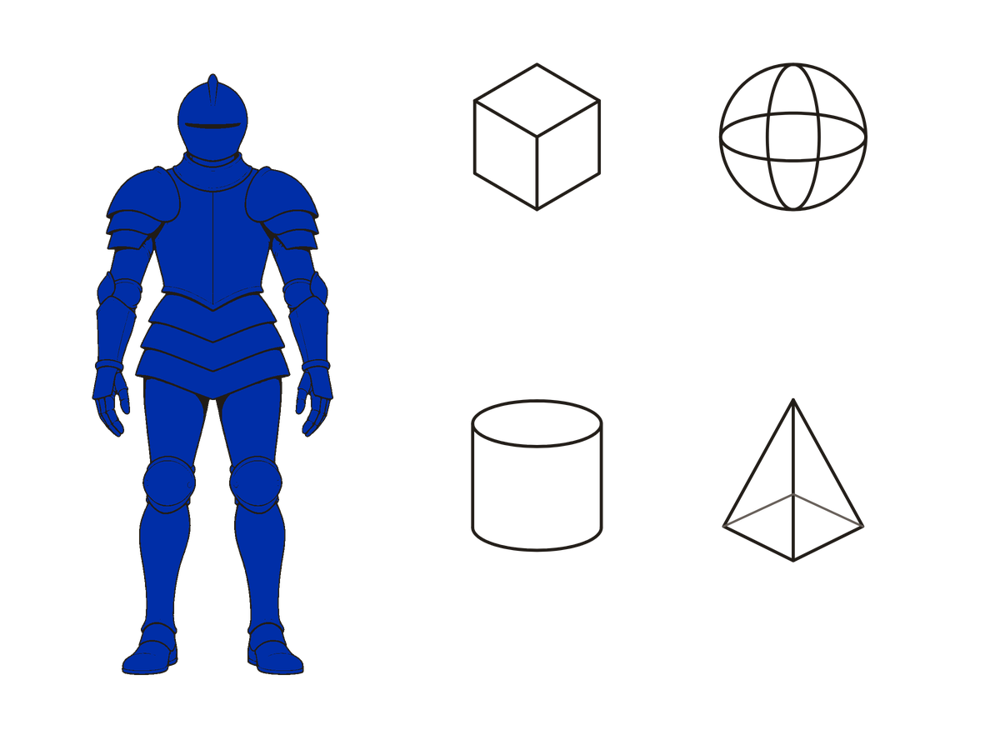
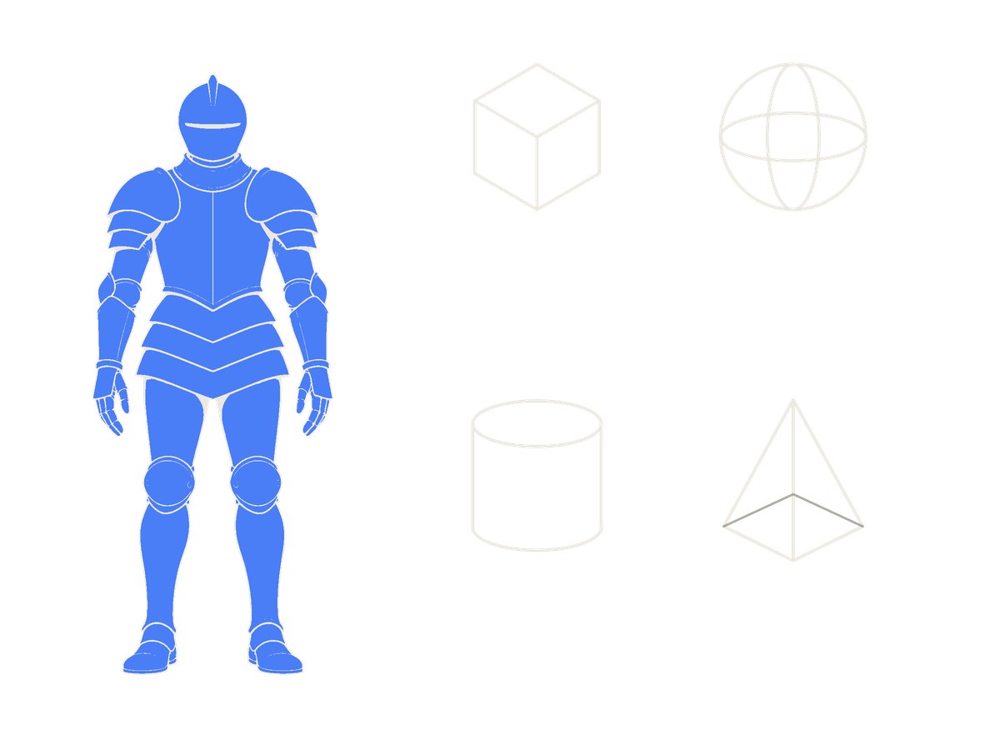
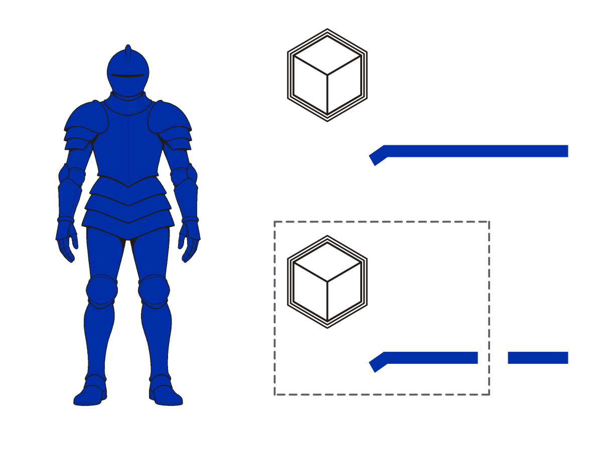
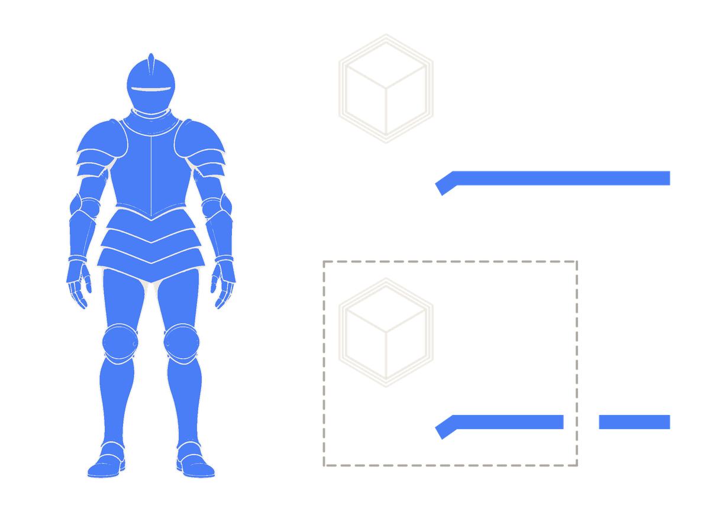

Intellectual property
Intellectual property enters the regime of the IOC as part of the infrastructure through which the platform defines what can be accessed, kept, altered, withdrawn, audited and contested, and not as a topic parallel or superior to consumer protection. Exclusivity has come to organize competition and enjoyment, and its social function, read from Article 5, item XXIX, of the Brazilian Federal Constitution1, makes it a field of reconciliation with the CDC.
Why does intellectual property enter a consumer protection regime?
In ecosystems of continuous digital consumption, intellectual property does not work only as protection of creation or as abstract economic exclusivity. It also works as part of the legal infrastructure through which the platform defines what can be accessed, kept, altered, withdrawn, audited and contested. That is why it is neither a parallel topic nor one hierarchically superior to consumer protection, because it applies inside the supply regime, as an element of governance of the object enjoyed. The relevant question is no longer who holds, in the abstract, the prerogative to modify the system, but which limits apply when this control, grounded in exclusivity, is exercised over continued enjoyment, over expectations incorporated into the relationship and over the conditions for verifying and contesting the performance.
Where it comes from
In ecosystems of continuous digital consumption, it does not function merely as a technique for protecting creation or as an instrument of abstract economic exclusivity. It operates, in practice, as part of the legal infrastructure through which the platform defines what can be accessed, kept, altered, withdrawn, audited and contested.p. 680
PT
Em ecossistemas de consumo digital contínuo, ela não funciona apenas como técnica de proteção da criação ou como instrumento de exclusividade econômica abstrata. Opera, na prática, como parte da infraestrutura jurídica pela qual a plataforma define o que pode ser acessado, mantido, alterado, retirado, auditado e contestado.
It is necessary to prevent intellectual property from functioning as a topic parallel, competing or hierarchically superior to consumer protection. In continuous digital services that operate Immaterial Objects of Consumption, exclusivity does not hover above the relationship as an abstract shield of ownership. It applies within the supply regime, as an element of governance of the object enjoyed.p. 680
PT
É necessário impedir que a propriedade intelectual funcione como tema paralelo, concorrente ou hierarquicamente superior à tutela do consumidor. Em serviços digitais contínuos que operam Objetos Imateriais de Consumo, a exclusividade não paira acima da relação como escudo abstrato de titularidade. Ela incide no interior do regime de fornecimento, como elemento de governança do objeto fruído.
It is not enough to ask who technically controls the environment or who holds, in the abstract, the prerogative to modify the system. The legally relevant question is a different one: which limits apply when this control, grounded in exclusivity, is exercised over continued enjoyment, over expectations legitimately incorporated into the relationship and over the conditions of verifiability and contestation of the performance.p. 680
PT
Não basta perguntar quem controla tecnicamente o ambiente ou quem detém, em abstrato, a prerrogativa de modificar o sistema. A pergunta juridicamente relevante é outra: quais limites incidem quando esse controle, fundado em exclusividade, é exercido sobre fruição continuada, sobre expectativas legitimamente incorporadas ao vínculo e sobre as condições de verificabilidade e contestação da prestação.
Intellectual property should be neither reduced nor demonized, since exclusivity remains legitimate and fulfills real functions of incentive, organization and protection, but it is not an automatic authorization for opacity, opportunistic mutability or shielding against control. Where exclusivity serves to preserve creation and organize the ecosystem, it remains intelligible on its own terms. Where it operates as a technique of unilateral reconfiguration of utility, of blocking auditability, of compressing reversibility or of naturalizing opaque sanctions, it becomes part of the dogmatic problem of private governance and needs to be brought back within the limits of the social function, consumer protection and the containment of private power. It thus stops being an argument for immunity and becomes a field of reconciliation.
Where it comes from
In this framework, intellectual property should be neither reduced nor demonized. Exclusivity remains legitimate and fulfills real functions of incentive, organization and protection. The point is only to refuse reading it as automatic authorization for opacity, for opportunistic mutability or for shielding against control.p. 680
PT
Nesse quadro, a propriedade intelectual não deve ser reduzida nem demonizada. A exclusividade continua legítima e cumpre funções reais de incentivo, organização e proteção. O ponto é apenas recusar sua leitura como autorização automática para opacidade, para mutabilidade oportunista ou para blindagem contra controle.
When exclusivity comes to operate, in the context of supply, as a technique of unilateral reconfiguration of utility, of blocking auditability, of compressing reversibility or of naturalizing opaque sanctioning regimes, it ceases to be simple protection of an asset and becomes part of the very dogmatic problem of the private governance of the IOC.p. 680
PT
Quando a exclusividade passa a operar, no contexto do fornecimento, como técnica de reconfiguração unilateral da utilidade, de bloqueio de auditabilidade, de compressão da reversibilidade ou de naturalização de regimes sancionatórios opacos, ela deixa de ser simples proteção de ativo e passa a integrar o próprio problema dogmático da governança privada do OIC.
What is under examination is not the exclusive right in itself, but the way it projects onto immaterial objects of consumption whose utility depends on a governed environment. Where exclusivity serves to preserve creation and organize the ecosystem, it remains intelligible on its own terms. Where it serves structural opacity, opportunistic reconfiguration, blocking of auditability and capture of enjoyment under the language of license and secrecy, it needs to be brought back within the limits imposed by the social function, by consumer protection and by the containment of private power.p. 681
PT
O que se põe em exame não é o direito exclusivo em si, mas o modo como ele se projeta sobre objetos imateriais de consumo cuja utilidade depende de ambiente governado. Onde a exclusividade serve para preservar criação e organizar o ecossistema, ela permanece inteligível em seus próprios termos. Onde serve para opacidade estrutural, reconfiguração oportunista, bloqueio de auditabilidade e captura da fruição sob linguagem de licença e segredo, ela precisa ser reconduzida aos limites impostos pela função social, pela tutela do consumidor e pela contenção do poder privado.
Instead of functioning as an argument for immunity, intellectual property comes to be treated as a field of reconciliation.p. 681
PT
Em vez de funcionar como argumento de imunidade, a propriedade intelectual passa a ser tratada como campo de compatibilização.
How did intellectual property change competition in immaterial markets?
When the economic object stops being a thing delivered and circulated and becomes a continuous immaterial good, mediated by platforms, accounts, catalogs, interfaces and access rules, the nature of what is contested changes. What comes to matter is controlling who gets in, by which route, on what terms they stay and at what cost they can leave. The frictions that make leadership contestable in material goods, such as installed capacity, logistics and access to inputs, are partly replaced by network effects, by lock-in, which is the user's entrapment by the cost of leaving, by standardized interfaces and by the accumulation of data. Competition tends to shift toward the contest for a gatekeeping position, meaning control over the gateways into the ecosystem, and market power becomes command over the infrastructure in which consumer choice becomes possible.
Where it comes from
When the economic object ceases to be a material good, delivered and circulated as a thing, and becomes a continuous immaterial good, mediated by platform, by account, by catalog, by interface and by access rules, what economic agents compete over changes in nature. Instead of competing only on productive efficiency, on price or on the intrinsic quality of a product, what comes to matter is controlling access, that is, defining who gets in, by which route, under which conditions they stay and at what costs they can leave.p. 232
PT
Quando o objeto econômico deixa de ser um bem material, entregue e circulável como coisa, e passa a ser um bem imaterial contínuo, mediado por plataforma, por conta, por catálogo, por interface e por regras de acesso, aquilo que se disputa entre agentes econômicos muda de natureza. Em vez de competir apenas por eficiência produtiva, por preço ou por qualidade intrínseca de um produto, passa a importar controlar o acesso, isto é, definir quem entra, por onde entra, em quais condições permanece e sob quais custos consegue sair.
Installed capacity, logistics, marginal costs, access to inputs and productive dispersion function, as a rule, as brakes that make leadership relevant, but more contestable over time.p. 233
PT
Capacidade instalada, logística, custos marginais, acesso a insumos e dispersão produtiva funcionam, em regra, como travas que tornam a liderança relevante, mas mais contestável ao longo do tempo.
In immaterial goods and services mediated by platforms, the dynamic is reorganized because part of these frictions is replaced by concentration mechanisms proper to digital infrastructure. Non-rivalry and reproducibility at reduced marginal cost do not eliminate competition, but shift the terrain of the dispute to network effects, lock-in, standardization of interfaces and protocols, informational economies of scale and accumulation of data.p. 233
PT
Em bens e serviços imateriais mediados por plataformas, a dinâmica se reorganiza porque parte dessas fricções é substituída por mecanismos de concentração próprios da infraestrutura digital. A não rivalidade e a reprodutibilidade a custo marginal reduzido não eliminam competição, mas deslocam o terreno da disputa para efeitos de rede, lock-in, padronização de interfaces e protocolos, economias de escala informacional e acumulação de dados.
What is disputed, therefore, is the infrastructure that makes the promise consumable, and not merely the promise in the abstract. For this reason, competition in platform economies tends to take on an asymmetric design, shifting from the contest over products to the contest for a gatekeeping position over technical and symbolic ecosystems.p. 232
PT
O que se disputa, portanto, é a infraestrutura que torna consumível a promessa, e não apenas a promessa em abstrato. Por isso, a concorrência nas economias de plataforma tende a assumir um desenho assimétrico, se deslocando da disputa por produtos para a disputa por posição de gatekeeping sobre ecossistemas técnicos e simbólicos.
“Market power” exacerbates the field of participation in sales, becoming command over the very infrastructure in which the consumer's “choice” becomes possible.p. 232
PT
O “poder de mercado” exacerba o campo da participação em vendas, tornando-se comando sobre a própria infraestrutura na qual a “escolha” do consumidor se torna possível.
Intellectual property enters this picture as a material component of the architecture of closure. Since reproducibility would tend to dissolve the price of immaterial goods, income depends on reintroducing scarcity by institutional decision. When this decision is coupled with license agreements, accounts, DRM, which is digital rights management, catalogs and authentication, circulation comes to be treated as infringement and enjoyment turns into authorization. From Ladislau Dowbor comes the image of the legal latifundium, the hypertrophied exclusivity that ends up withholding social utility and charging a toll on access and diffusion. The same enclosure reaches what the consumer produces in the ecosystem. A clause on user-generated content is not unlawful in itself, because it can serve hosting and circulation functions. The problem arises when the standard authorization goes beyond what is necessary and transfers to the platform ownership of the derivative works produced through the use itself.
Where it comes from
It is here that intellectual property rights cease to appear as a peripheral legal title and come to operate as a material component of the architecture of closure. The decisive economic point is simple and direct, since, in the market for immaterial goods, reproducibility would tend to dissolve the price, so that income depends on reintroducing scarcity by institutional decision. When this decision is coupled with license agreements, accounts, DRM, catalogs and authentication mechanisms, the incentive to creation gives way to a blocking technology, which causes circulation to be treated as infringement and enjoyment to turn into authorization.p. 234
PT
É aqui que os direitos de propriedade intelectual deixam de aparecer como título jurídico periférico e passam a operar como componente material da arquitetura de fechamento. O ponto econômico decisivo é simples e direto, pois, no mercado de bens imateriais, a reprodutibilidade tenderia a dissolver o preço, de modo que a renda depende de reintroduzir escassez por decisão institucional. Quando essa decisão se acopla a contratos de licença, contas, DRM, catálogos e mecanismos de autenticação, o incentivo à criação cede espaço a uma tecnologia de bloqueio, o que faz com que a circulação seja tratada como infração e a fruição se converta em autorização.
Acronym for Digital Right Management, “Gestão de Direitos Digitais”.p. 234
PT
Sigla para Digital Right Management, “Gestão de Direitos Digitais”.
The metaphor of the “legal latifundium”, in Dowbor, describes a teleological dysfunction internal to the Intellectual Property regime: situations in which exclusivity, through hypertrophy of scope, duration and chains of licenses, ceases to operate predominantly as a temporary technique for stimulating future creativity and comes to function as a mechanism for the artificial retention of social utility and for charging tolls on access, recombination and diffusion of technically reproducible knowledge (Dowbor, 2024, p. 44-45).p. 235
PT
A metáfora do “latifúndio jurídico”, em Dowbor, descreve uma disfunção teleológica interna ao regime de Propriedade Intelectual: situações em que a exclusividade, por hipertrofia de escopo, duração e encadeamentos de licenças, deixa de operar predominantemente como técnica temporária de estímulo à criatividade futura e passa a funcionar como mecanismo de retenção artificial de utilidade social e de cobrança de pedágios sobre acesso, recombinação e difusão do conhecimento tecnicamente reproduzível (Dowbor, 2024, p. 44-45) .
In contractual terms, the presence of clauses on user-generated content (UGC) is not, in itself, unlawful, since it can fulfill operational functions of hosting, making available and circulating content in digital ecosystems.p. 237
PT
Em termos contratuais, a presença de cláusulas sobre conteúdo gerado por usuários (UGC) não é, por si, ilícita, pois pode cumprir funções operacionais de hospedagem, disponibilização e circulação do conteúdo em ecossistemas digitais.
Although UGC models may require licenses functionally necessary for the circulation of content in the ecosystem, the legal problem emerges when the standard authorization expands beyond what is necessary and turns into automatic appropriation of the content generated by the user, transferring to the platform ownership of creative interactions and derivative works produced in the use itself.p. 237
PT
Embora modelos de UGC possam exigir licenças funcionalmente necessárias à circulação do conteúdo no ecossistema, o problema jurídico emerge quando a autorização padrão se expande para além do necessário e se converte em apropriação automática do conteúdo gerado pelo usuário, transferindo à plataforma a titularidade de interações criativas e obras derivadas produzidas no próprio uso.
The result is an economy of cumulative permissions, in which each portion of access works as a key and the accumulation of keys turns into market power, because software, copyright-protected content, distinctive signs, design and licenses are layered over the same experience. At the extreme, Dowbor describes the tragedy of the anticommons, a concept formulated by Michael Heller and developed with Rebecca Eisenberg, in which the fragmentation of exclusivities distributes veto powers and makes recombination unlikely. For consumption, it follows that the sign of a product, in commercial discourse, may conceal an enjoyment governed by partial authorizations, which reinforces the need to make verifiable the restrictions that actually bear on the promised utility. The description is economic and does not undo the legal qualification, since Article 3, paragraph 1, of the CDC2 suffices to understand the IOC as an immaterial product, as the chapter on the object shows.
Where it comes from
What is consolidated is an economy of cumulative permissions, in which each portion of access works as a key, and the accumulation of keys turns into market power.p. 237
PT
O que se consolida é uma economia de permissões cumulativas, na qual cada parcela de acesso funciona como chave, e o acúmulo de chaves se converte em poder de mercado.
Within the scope in view, this process shows itself through the superimposition of layers of control bearing on the same experience. One may cite, for example, software and code, copyright-protected content, distinctive signs, design and contractual license regimes, so that each layer can operate as a basis for restricting, modulating or charging for uses and circulations.p. 240
PT
Sob o recorte em vista, tal processo se manifesta por via da sobreposição de camadas de controle incidentes sobre a mesma experiência. Pode-se citar, por exemplo, software e código, conteúdos protegidos por direitos autorais, sinais distintivos, design e regimes contratuais de licença, de modo que cada camada pode operar como base para restringir, modular ou tarifar usos e circulações.
The concept of the tragedy of the anticommons, formulated by Michael Heller and developed with Rebecca Eisenberg, describes a regime in which the fragmentation of exclusive rights distributes among multiple holders veto powers over parts, layers or components of the same resource, so that efficient use depends less on technical feasibility and more on costly legal coordinationp. 239
PT
O conceito de tragédia dos anti-comuns, formulado por Michael Heller e desenvolvido com Rebecca Eisenberg, descreve um regime em que a fragmentação de direitos de exclusividade distribui entre múltiplos titulares poderes de veto sobre partes, camadas ou componentes de um mesmo recurso, fazendo com que o uso eficiente dependa menos de viabilidade técnica e mais de coordenação jurídica custosa
For consumption, the relevant effect is that the sign of “product” may conceal an enjoyment governed by partial authorizations, reinforcing the need to make verifiable, in terms of auditability, the restrictions effectively bearing on the promised utility when governance by titles, licenses and access controls degrades the functional value of the experience.p. 240
PT
Para o consumo, o efeito relevante é que o signo de “produto” pode encobrir uma fruição governada por autorizações parciais, reforçando a necessidade de tornar verificáveis, em termos de auditabilidade, as restrições efetivamente incidentes sobre a utilidade prometida quando a governança por títulos, licenças e controles de acesso degrada o valor funcional da experiência.
What appears as a product in commercial discourse, in practice, comes to function as a bundle of fragmented, revocable and conditional authorizations.p. 240
PT
O que aparece como produto no discurso comercial, na prática, passa a funcionar como feixe de autorizações fragmentadas, revogáveis e condicionais.
Article 3, paragraph 1, of the CDC2 already offers sufficient basis to understand the IOC as an immaterial product.p. 574
PT
O art. 3º, § 1º, do CDC já oferece base suficiente para compreender o OIC como produto imaterial.
Why is the question not whether to be for or against intellectual property?
Dowbor's critique is not directed against intellectual property. He recognizes the historical legitimacy of rewarding the inventor and the author and places the turning point at the moment the instrument turns into a rentier charge for access. This happens, for example, when exclusivity lasts decades beyond the years in which profit is realized or when the rights almost always stay with intermediaries rather than with the creator. The question is no longer whether one is for or against intellectual property but how to calibrate it teleologically, that is, by its purpose, measuring how far exclusivity is still an incentive and at what point it becomes a structural toll. The issue is not moral but one of institutional design, and in the context of consumption it translates into criteria of loyalty, material transparency and preservation of the legitimately expected functional minimum.
Where it comes from
Dowbor does not engage in a simplistic critique of intellectual property. On the contrary, he recognizes the historical legitimacy of the incentive, understood as privileged remuneration of the inventor or author, so as to stimulate scientific and cultural advances (Dowbor, 2024, p. 36). The turning point, however, comes when the instrument loses social validity by turning into a rentier charge for access.p. 242
PT
Dowbor não procede a uma crítica simplista à propriedade intelectual. Ao contrário, reconhece a legitimidade histórica do incentivo, entendido como remuneração privilegiada do inventor ou do autor, de modo a estimular avanços científicos e culturais (Dowbor, 2024, p. 36) . O ponto de inflexão, porém, ocorre quando o instrumento perde validade social ao converter-se em cobrança rentista por acesso.
The argument is one of political economy, since, if the realization of profit is concentrated mostly in the first years of commercial exploitation (Dowbor, 2024, p. 43), maintaining exclusivity for decades operates as income without a proportional incentive function and imposes a massive social cost on research and creative reuse to sustain concentrated private flows.p. 238
PT
O argumento é de economia política, pois, se a realização do lucro se concentra majoritariamente nos primeiros anos de exploração comercial (Dowbor, 2024, p. 43) , a manutenção da exclusividade por décadas opera como renda sem função incentivadora proporcional e impõe custo social massivo à pesquisa e ao reuso criativo para sustentar fluxos privados concentrados.
The author, as the subject of intellectual creation, has little to do with this dynamic, since the rights almost always belong to intermediaries (Dowbor, 2024, p. 44).p. 238
PT
O autor, enquanto sujeito da criação intelectual, pouco tem a ver com essa dinâmica, uma vez que os direitos são quase sempre de intermediários (Dowbor, 2024, p. 44) .
It is exactly at this point that the discussion ceases to be whether we are “against or in favor of intellectual property” and becomes “how can we teleologically calibrate intellectual property”. Because, if the real economic function of enclosure is to reinstate scarcity where technique would dissolve the price, the relevant legal problem becomes measuring how far exclusivity is still an incentive, and from what moment it becomes a structural toll. The questioning is not moral; it is a matter of institutional design, especially when the platform already dominates access and can convert any legal friction into competitive advantage.p. 241
PT
É exatamente nesse ponto que a discussão deixa de ser se somos “contra ou a favor da propriedade intelectual” e se torna “como podemos calibrar teleologicamente a propriedade intelectual”. Porque, se a função econômica real do cercamento é reinstalar escassez onde a técnica dissolveria o preço, o problema jurídico relevante passa a ser medir até quanto a exclusividade ainda é incentivo, e a partir de que momento ela se torna um pedágio estrutural. O questionamento não é moral; trata-se de um desenho institucional, especialmente quando a plataforma já domina o acesso e consegue converter qualquer fricção jurídica em vantagem concorrencial.
Within the present scope, this renews the need to define criteria of loyalty, material transparency and preservation of the legitimately expected functional minimum in consumption environments mediated by platforms.p. 242
PT
Sob o recorte em pauta, isso recoloca a necessidade de se definir critérios de lealdade, transparência material e preservação do mínimo funcional legitimamente esperado nos ambientes de consumo mediados por plataformas.
Why is the platform's intellectual property not a single block?
To describe what intellectual property does within supply, the central reference is Denis Borges Barbosa, for whom industrial property has always consisted of a series of techniques for controlling competition. Exclusivity is not a spontaneous quality of the immaterial good but the result of legal intervention that creates artificial scarcity, which prevents treating every power of the platform over enjoyment as if it derived from the nature of the protected asset. Hence the distinction that business discourse tends to blur. Trademarks, copyright, software, distinctive signs and interfaces do not confer the same type or the same extent of exclusivity, and the legal order does not authorize treating all technical control of the environment as if it derived from a unitary and unrestricted sovereignty.
Where it comes from
Intellectual property does not act merely as peripheral protection of isolated assets, but as a legal technique for organizing the market and delimiting exclusivities over immaterial goods. It is in this key that Barbosa states that, in market economies, industrial property has always consisted of “a series of techniques for controlling competition”, intended to secure business investment in immaterial elements such as name, trademark, technology and institutional image (Barbosa, 2010, p. 73).p. 682
PT
A propriedade intelectual não atua apenas como proteção periférica de ativos isolados, mas como técnica jurídica de organização de mercado e delimitação de exclusividades sobre bens imateriais. É nessa chave que Barbosa afirma que, nas economias de mercado, a propriedade industrial sempre consistiu em “uma série de técnicas de controle da concorrência”, destinadas a assegurar o investimento empresarial em elementos imateriais como nome, marca, tecnologia e imagem institucional (Barbosa, 2010, p. 73) .
Exclusivity is not a spontaneous quality of the immaterial good; it is the result of legal intervention that organizes flows of use, reproduction, circulation and exploitation (Barbosa, 2010, p. 77-79; p. 113). This matters because it prevents naturalizing the platform's position as if every power it exercises over enjoyment derived immediately from the “nature” of the protected asset.p. 682
PT
A exclusividade não é qualidade espontânea do bem imaterial; é resultado de intervenção jurídica que organiza fluxos de uso, reprodução, circulação e exploração (Barbosa, 2010, p. 77-79; p. 113) . Isso importa porque impede naturalizar a posição da plataforma como se todo poder que ela exerce sobre a fruição decorresse imediatamente da “natureza” do ativo protegido.
The intellectual property infrastructure that sustains the platform is not homogeneous. Trademarks, copyright, software, distinctive signs, interfaces and related institutes do not confer the same type or the same extent of exclusivity. The Brazilian legal order does not authorize treating all technical control of the environment as if it derived from a unitary and unrestricted sovereignty over the consumed experience. The very idea of intellectual property is born as a normative construction of artificial scarcity, created to make economically appropriable what, in its natural state, would circulate without equivalent barriers.p. 682
PT
A infraestrutura de propriedade intelectual que sustenta a plataforma não é homogênea. Marcas, direitos autorais, software, sinais distintivos, interfaces e institutos conexos não conferem o mesmo tipo nem a mesma extensão de exclusividade. O ordenamento brasileiro não autoriza tratar todo controle técnico do ambiente como se decorresse de uma soberania unitária e irrestrita sobre a experiência consumida. A própria ideia de propriedade intelectual já nasce como construção normativa de escassez artificial, criada para tornar economicamente apropriável aquilo que, em seu estado natural, circularia sem barreiras equivalentes.
Each regime acts in its own layer. Trademarks delimit belonging, authenticity and the distinction between the official and what is outside the ecosystem, and the legal basis lies in Articles 122 and 123, item I, of Law 9,279/19963. Copyright and related rights organize the reproduction, circulation and transformation of the expressive components of the experience, with reference to Articles 7, 28 and 29 of Law 9,610/19984. Software law projects onto execution, updating, modification and stability of the environment, and Articles 7 and 8 of Law 9,609/19985 deal with the period of technical validity of the version marketed and the complementary technical services owed during that period. On the consumer's side, this legal concentration over signs, code and content produces semiotic vulnerability, because the consumer comes to depend on the supplier also to know what is authentic, what is official and when the experience is equivalent to what was promised.
Where it comes from
Trademarks delimit belonging, authenticity and the distinction between the official and what is outside the ecosystem. Copyright and related rights organize the possibility of reproduction, circulation and transformation of the expressive components of the experience. Software law, in turn, projects directly onto execution, updating, modification and stability of the environment.p. 683
PT
Marcas delimitam pertencimento, autenticidade e distinção entre o oficial e o exterior ao ecossistema. Direitos autorais e direitos conexos organizam a possibilidade de reprodução, circulação e transformação dos componentes expressivos da experiência. O direito de software, por sua vez, projeta-se diretamente sobre execução, atualização, modificação e estabilidade do ambiente.
“Art. 122. Visually perceptible distinctive signs are eligible for registration as a trademark [...]. Art. 123. [...] the following is considered: I - product or service trademark: one used to distinguish a product or service from another identical, similar or related one, of different origin;” (Brasil, [2024]c).p. 683
PT
“Art. 122. São suscetíveis de registro como marca os sinais distintivos visualmente perceptíveis [...]. Art. 123. [...] considera-se: I - marca de produto ou serviço: aquela usada para distinguir produto ou serviço de outro idêntico, semelhante ou afim, de origem diversa;” (Brasil, [2024]c) .
“Art. 7 Protected intellectual works are creations of the mind, expressed by any means or fixed on any medium, tangible or intangible, known or to be invented in the future, such as:” (Brasil, [2021]).p. 683
PT
“Art. 7º São obras intelectuais protegidas as criações do espírito, expressas por qualquer meio ou fixadas em qualquer suporte, tangível ou intangível, conhecido ou que se invente no futuro, tais como:” (Brasil, [2021]) .
“Art. 7 The license agreement for use of a computer program, the corresponding tax document, the physical media of the program or the respective packaging shall state, in a form easily legible by the user, the period of technical validity of the version marketed.” (Brasil, [1998]).p. 683
PT
“Art. 7º O contrato de licença de uso de programa de computador, o documento fiscal correspondente, os suportes físicos do programa ou as respectivas embalagens deverão consignar, de forma facilmente legível pelo usuário, o prazo de validade técnica da versão comercializada.” (Brasil, [1998]) .
“Art. 8 Whoever markets a computer program [...] is obliged, in the national territory, during the period of technical validity of the respective version, to ensure to the respective users the provision of complementary technical services relating to the proper functioning of the program, considering its specifications.” (Brasil, [1998]).p. 683
PT
“Art. 8º Aquele que comercializar programa de computador [...] fica obrigado, no território nacional, durante o prazo de validade técnica da respectiva versão, a assegurar aos respectivos usuários a prestação de serviços técnicos complementares relativos ao adequado funcionamento do programa, consideradas as suas especificações.” (Brasil, [1998]) .
The consumer does not depend on the supplier only to access the object technically; they also depend on the supplier to understand what is authentic, what is official, what counts as valid belonging, what may circulate, what may be kept and under what conditions the experience will be deemed equivalent to what was promised. The legal concentration over signs, code, content and channels of circulation produces semiotic vulnerability not only through an information deficit, but because the platform controls the very means by which the offer is understood, equivalence is perceived, loss is recognized and proof is produced.p. 687
PT
O consumidor não depende apenas do fornecedor para acessar tecnicamente o objeto; depende dele também para compreender o que é autêntico, o que é oficial, o que conta como pertencimento válido, o que pode circular, o que pode ser mantido e sob quais condições a experiência será tida como equivalente àquilo que foi prometido. A concentração jurídica sobre signos, código, conteúdo e canais de circulação produz vulnerabilidade semiótica não apenas por déficit de informação, mas porque a plataforma controla os próprios meios pelos quais a oferta é entendida, a equivalência é percebida, a perda é reconhecida e a prova é produzida.






What does software protection authorize and what does it not authorize?
Software is the most sensitive point, because the platform often acts as if the protection of the technological infrastructure gave it practical sovereignty over the whole consumed experience. As Barbosa shows, the protection of computer programs in Brazilian law is predominantly a matter of copyright and bears on the expression of useful solutions, that is, on the code and certain non-literal manifestations, without being organized as a general patent over functionality, method of operation or user experience. Even when the program takes part in a new and inventive technical effect, the patent bears on a delimited technical solution, and not on the result, and the algorithm considered in the abstract remains free. Barbosa also notes that not all software is patentable in Brazil and that the unconditional prohibition of patents for business methods remains. This is enough to block the rhetoric that depending on protected code would authorize absolute control over mutability, auditability, functional equivalence and contestation of enjoyment.
Where it comes from
In the case of software, this tension takes on an even more precise contour. The platform often acts as if the legal protection of the technological infrastructure conferred on it practical sovereignty over the whole consumed experience, when the Brazilian regime does not deliver that.p. 698
PT
No caso do software, essa tensão ganha contorno ainda mais preciso. A plataforma frequentemente age como se a proteção jurídica da infraestrutura tecnológica lhe conferisse soberania prática sobre toda a experiência consumida, quando o regime brasileiro não entrega isso.
In Brazilian law, the protection of computer programs is not organized as a general patent over functionality, method of operation or user experience. Its protection is predominantly copyright-based, and even when a program takes part in obtaining a new and inventive technical effect, the patent does not project onto the software as such, nor onto the abstract logic underlying the consumed experience. Patent protection bears on a delimited technical solution, not on the result in the abstract nor on all the functionality perceived by the user (Barbosa, 2010b, p. 1128; p. 1116).p. 684
PT
No direito brasileiro, a tutela do programa de computador não se organiza como patente geral sobre funcionalidade, método de operação ou experiência de uso. Sua proteção é predominantemente autoral, e mesmo quando um programa participa da obtenção de efeito técnico novo e inventivo, a patente não se projeta sobre o software como tal, nem sobre a lógica abstrata subjacente à experiência consumida. A proteção patentária recai sobre solução técnica delimitada, não sobre o resultado em abstrato nem sobre toda a funcionalidade percebida pelo usuário (Barbosa, 2010b, p. 1128; p. 1116) .
Barbosa states precisely that software is primarily protected by a copyright-type regime, which bears on the expression of useful solutions, that is, on the code and certain non-literal manifestations, but does not reach solutions of technical effect as such.p. 685
PT
Barbosa delimita com precisão que o software é primariamente protegido por regime de cunho autoral, que recai sobre a expressão das soluções úteis, isto é, sobre o código e certas manifestações não literais, mas não alcança as soluções de efeito técnico como tais.
Barbosa is categorical in stating that, in Brazilian law, not all software will be eligible for patent protection, but only some inventions relating to computer programs, which is why, with even more force, the unconditional prohibition on granting patents for business methods persists in Brazil (Barbosa, 2010b, p. 1136).p. 685-686
PT
Barbosa é categórico ao afirmar que, no direito brasileiro, nem todo software será suscetível de proteção patentária, mas apenas algumas invenções relativas a programas de computador, razão pela qual, com ainda mais força, subsiste entre nós a proibição incondicional de deferimento de patentes para métodos de negócio (Barbosa, 2010b, p. 1136) .
Even in the exceptional cases in which the program takes part in a patentable technical solution, the algorithm considered in the abstract remains free, and the program as such does not become the object of a patent in a broad sense (Barbosa, 2010b, p. 1123-1124). This is enough to block a very common rhetoric on platforms: that the mere fact that the environment depends on protected code would authorize, without remainder, absolute control over mutability, auditability, functional equivalence and contestation of enjoyment.p. 685
PT
Mesmo nas hipóteses excepcionais em que o programa participa de solução técnica patenteável, o algoritmo abstratamente considerado permanece livre, e o programa como tal não se converte em objeto de patente em sentido amplo (Barbosa, 2010b, p. 1123-1124) . Isso basta para bloquear uma retórica muito comum nas plataformas: a de que o simples fato de o ambiente depender de código protegido autorizaria, sem resto, controle absoluto sobre mutabilidade, auditabilidade, equivalência funcional e contestação da fruição.
Containment does not lead to the opposite extreme. Software is not legally neutral, because running it and making it work already involves the exercise of an intellectual right, and license, control of execution and discipline of updates are recognized instruments for organizing this power. Barbosa observes, however, that the primary source of a program's value lies in its behavior, and not in the text, and that copyright protection does not extend to the method of operation. Once in commerce, certain subsequent effects escape the reach of exclusivity, and insisting on controlling them as a natural extension of the title may constitute abuse of rights, just as the use of intellectual property rights to dominate markets or limit access may constitute an infringement of the economic order. On the basis of this regime, it is incompatible with the Constitution to convert technical control of the infrastructure into total power over the consumed experience, and the social function operates as a brake against this overreach.
Where it comes from
[...] the centrality of software in the platform's infrastructure does not authorize presenting it as a source of unlimited legal power over everything the consumer experiences in the ecosystem. None of this means, on the other hand, that software is legally neutral or marginal. On the contrary. Its protection regime participates directly in control over the use, execution, updating, maintenance and exploitation of the program. Running the software, using it and making it work already involves the exercise of an intellectual right, and not mere use of a physical medium, which helps explain why the computing infrastructure participates immediately in organizing the enjoyment of the IOC (Barbosa, 2017, p. 2015; p. 1959).p. 686
PT
[...] a centralidade do software na infraestrutura da plataforma não autoriza apresentá-lo como fonte de poder jurídico ilimitado sobre tudo aquilo que o consumidor experimenta no ecossistema. Nada disso significa, por outro lado, que o software seja juridicamente neutro ou marginal. Ao contrário. Seu regime de proteção participa diretamente do controle sobre uso, execução, atualização, manutenção e exploração do programa. Rodar o software, utilizá-lo e fazê-lo funcionar já envolve exercício de direito intelectual, e não simples uso de suporte físico, o que ajuda a explicar por que a infraestrutura computacional participa imediatamente da organização da fruição do OIC (Barbosa, 2017, p. 2015; p. 1959) .
Of course the protection of software explains an important part of the platform's technical power. License, control of execution and discipline of updates are legally recognized instruments for organizing this power.p. 699
PT
Claro que a tutela do software explica parte importante do poder técnico da plataforma. Licença, controle de execução e disciplina de atualização são instrumentos juridicamente reconhecidos de organização desse poder.
Barbosa underlines exactly this point when observing that one of the greatest discussions in the field of intellectual property applied to software stems from the fact that the primary source of a program's value lies not in the text itself, but in its behavior, it being possible for distinct codes to lead to identical functional results (Barbosa, 2017, p. 1899).p. 687
PT
Barbosa sublinha exatamente esse ponto ao observar que uma das maiores discussões no campo da propriedade intelectual aplicada ao software decorre do fato de que a fonte primária de valor do programa não está no texto em si, mas no seu comportamento, sendo possível que códigos distintos conduzam a resultados funcionais idênticos (Barbosa, 2017, p. 1899) .
Although he recognizes that copyright protection is not limited to the literal expression of the instructions, and may also reach the way the elements composing the software are organized, Barbosa warns that, “insofar as the internal form is directly related to functionality, it will not be protected by Copyright”, since the latter “does not protect the structure in itself”; in other words, “the authorial protection of the program does not extend to the method of operation” (Barbosa, 2017, p. 1890).p. 687
PT
Embora reconheça que a proteção autoral não se limita à expressão literal das instruções, podendo alcançar também o modo de organização dos elementos que compõem o software, Barbosa adverte que, “na medida em que a forma interna esteja diretamente relacionada com a funcionalidade, não estará protegida pelo Direito de Autor”, pois este “não tutela a estrutura em si mesma”; em outras palavras, “a proteção autoral do programa não se estende ao método de funcionamento” (Barbosa, 2017, p. 1890) .
Once in commerce, certain subsequent effects escape the reach of exclusivity, and insisting on controlling them as if everything were still a natural extension of the title may constitute abuse of rights (Barbosa, 2010b, p. 1145; p. 1139). This means that control of the code, execution and updating does not authorize, without more, blocking verifiability, neutralizing the assessment of functional loss or reducing enjoyment to a disposable permission administered ad nutum.p. 698-699
PT
Uma vez no comércio, certos efeitos subsequentes escapam ao alcance da exclusividade, e insistir em controlá-los como se tudo ainda fosse extensão natural do título pode configurar abuso de direito (Barbosa, 2010b, p. 1145; p. 1139) . Isso significa que controle do código, da execução e da atualização não autoriza, sem mais, bloquear verificabilidade, neutralizar aferição de perda funcional ou reduzir a fruição a permissão descartável administrada ad nutum.
In Brazilian law, the use of intellectual property rights to dominate the market or limit access may constitute an infringement of the economic order, in light of the constitutional protection of freedom of competition (Barbosa, 2017, p. 2025).p. 699
PT
No direito brasileiro, a utilização dos direitos de propriedade intelectual para dominar o mercado ou limitar o acesso pode configurar infração à ordem econômica, à luz da tutela constitucional da liberdade de concorrência (Barbosa, 2017, p. 2025) .
Since the protection of programs in Brazil is not structured under a broad patent logic over function, method or result, but under a special, predominantly authorial regime, it is incompatible with the Constitution to convert technical control of the infrastructure into total power over the consumed experience.p. 706
PT
Como a proteção do programa no Brasil não se estrutura sob lógica patentária ampla sobre função, método ou resultado, mas sob regime especial predominantemente autoral, é incompatível com a Constituição converter controle técnico da infraestrutura em poder total sobre a experiência consumida.
The social function operates, here, as a brake against this overreach.p. 707
PT
A função social opera, aqui, como trava contra essa extrapolação.
Why do trademarks and industrial design matter on the consumer's side?
The layer of signs is the other side of the argument. The trademark is one of the clearest examples of the juridification of the semiotic layer of the market, because protection bears on the sign's aptitude to identify and distinguish products or services. José Carlos Tinoco Soares requires a trademark to be distinctive, special and unmistakable, and Douglas Gabriel Domingues highlights its advertising function and the symbolic universes of prestige and status associated with it. If the legal order recognizes that signs produce real economic, competitive and legal effects, there is no honest basis to deny that the same signs, when they govern enjoyment, also structure expectation, belonging, reputation and perceived functional value. When the layer of signs protects the supplier's origin and clientele, its relevance is promptly recognized, and when it structures the way the consumer perceives authenticity, equivalence and loss, traditional legal discourse tends to retreat. There is an asymmetry of legal visibility here.
Where it comes from
The trademark offers, among the institutes of intellectual property, one of the clearest examples of the juridification of the semiotic layer of the market. Its protection does not bear only on a word, figure or formally registrable medium, but on the sign's aptitude to present, mark, identify and distinguish products or services in economic traffic.p. 687-688
PT
A marca oferece, entre os institutos de propriedade intelectual, um dos exemplos mais nítidos de juridicização da camada semiótica do mercado. Sua proteção não recai apenas sobre uma palavra, figura ou suporte formalmente registrável, mas sobre a aptidão do sinal para apresentar, assinalar, identificar e distinguir produtos ou serviços no tráfego econômico.
Not by chance, classical doctrine describes it precisely as the sign by which the product or service becomes known and distinguished in the market, requiring, for the fulfillment of this purpose, that it be distinctive, special and unmistakable (Soares, 2000, p. 16; p. 109).p. 688
PT
Não por acaso, a doutrina clássica a descreve precisamente como o sinal pelo qual o produto ou o serviço se torna conhecido e distinguido no mercado, exigindo, para o cumprimento dessa finalidade, que seja distintiva, especial e inconfundível (Soares, 2000, p. 16; p. 109) .
The very evolution of trademark doctrine reveals that the economic centrality of the trademark depends less on the physical medium than on its capacity to condense identity, fix perception and guide the consumer's choice, including through its advertising function and the constitution of symbolic universes associated with the product, the prestige and the social status it represents (Domingues, 1984, p. 70-71; p. 89).p. 689
PT
A própria evolução da doutrina marcária revela que a centralidade econômica da marca depende menos do suporte físico que da sua capacidade de condensar identidade, fixar percepção e orientar a escolha do consumidor, inclusive por meio de sua função publicitária e da constituição de universos simbólicos associados ao produto, ao prestígio e ao status social que ele representa (Domingues, 1984, p. 70-71; p. 89) .
If the legal order recognizes that signs produce real economic, competitive and legal effects, there is no honest basis to deny that these same signs, when they come to govern enjoyment in continuous digital ecosystems, also structure expectation, belonging, reputation, perceived functional value and consumer vulnerability.p. 689
PT
Se o ordenamento reconhece que signos produzem efeitos econômicos, concorrenciais e jurídicos reais, não há base honesta para negar que esses mesmos signos, quando passam a governar a fruição em ecossistemas digitais contínuos, também estruturam expectativa, pertencimento, reputação, valor funcional percebido e vulnerabilidade do consumidor.
It is not, therefore, a matter of discovering a new type of phenomenon, but of correcting an asymmetry of legal visibility. When the sign layer organizes origin, differentiation and attraction of clientele in favor of the supplier, its relevance is promptly recognized. When this same layer comes to structure the criteria by which the consumer perceives authenticity, officialness, equivalence and relevant loss within the platform, the tendency of traditional legal discourse is to retreat before its immaterial dimension. What this thesis proposes is precisely to refuse this selective blindness.p. 689-690
PT
Não se trata, portanto, de descobrir um novo tipo de fenômeno, mas de corrigir uma assimetria de visibilidade jurídica. Quando a camada sígnica organiza origem, diferenciação e captação de clientela em favor do fornecedor, sua relevância é prontamente reconhecida. Quando essa mesma camada passa a estruturar os critérios pelos quais o consumidor percebe autenticidade, oficialidade, equivalência e perda relevante no interior da plataforma, a tendência do discurso jurídico tradicional é recuar diante da sua dimensão imaterial. O que esta tese propõe é precisamente recusar essa cegueira seletiva.
Industrial design offers further evidence. Article 95 of Law 9,279/19966 protects the ornamental plastic form that provides a new and original visual result in the external configuration of the object, and in doing so the law recognizes the ornamental form as an element of attraction and differentiation, beyond technical function. Barbosa speaks of the seductive power of aesthetic configuration and gives the example of the plate decorated with a protected figure, which may be the object of exclusivity, while the same plate without the design remains free, so that the boundary of protection lies in the aesthetic investment, and not in utility. It follows that the visuals of interfaces, the aesthetic composition of skins, which are the appearances bought for characters, the graphic effects and the visually coded signs of rarity take part in the economy of belonging and perceived value. The difference between the decorated corporeal object and the continuously enjoyed immaterial object only shifts the medium.
Where it comes from
“Art. 95. Industrial design is considered to be the ornamental plastic form of an object or the ornamental set of lines and colors that may be applied to a product, providing a new and original visual result in its external configuration and that may serve as a type of industrial manufacture.” (Brasil, [2024]c).p. 691
PT
“Art. 95. Considera-se desenho industrial a forma plástica ornamental de um objeto ou o conjunto ornamental de linhas e cores que possa ser aplicado a um produto, proporcionando resultado visual novo e original na sua configuração externa e que possa servir de tipo de fabricação industrial.” (Brasil, [2024]c) .
The dogmatically relevant point here is that the law does not limit itself to protecting technical function, material utility or business origin. It recognizes, in its own key, the legal relevance of ornamental form as an element of market insertion, attraction and differentiation of the good.p. 691
PT
O ponto dogmaticamente relevante, aqui, é que a lei não se limita a proteger função técnica, utilidade material ou procedência empresarial. Ela reconhece, em chave própria, a relevância jurídica da forma ornamental como elemento de inserção mercadológica, atração e diferenciação do bem.
The protection of industrial design starts precisely from the premise that the aesthetic configuration of the product can add seductive power and greater commercial value to it, directly influencing the public's choice.p. 691
PT
A proteção do desenho industrial parte precisamente da premissa de que a configuração estética do produto pode agregar-lhe poder de sedução e maior valor comercial, infletindo diretamente na escolha do público.
The example is eloquent: a plate decorated with a protected figure may be the object of exclusivity, while the same plate, identical in size, material and functionality, but lacking that design, remains free for reproduction by third parties (Barbosa, 2018, p. 50). The boundary of protection does not lie, therefore, in the materiality of the good nor in its practical function, but in the aesthetic investment incorporated into its external configuration.p. 691
PT
O exemplo é eloquente: um prato ornamentado com figura protegida pode ser objeto de exclusividade, ao passo que o mesmo prato, idêntico em tamanho, material e funcionalidade, mas desprovido daquele desenho, permanece livre à reprodução por terceiros (Barbosa, 2018, p. 50) . A fronteira da tutela não está, portanto, na materialidade do bem nem na sua função prática, mas no investimento estético incorporado à sua configuração externa.
In continuous consumption environments, the visuals of interfaces, the aesthetic composition of skins, distinctive finishes, graphic effects, visually coded signs of rarity and the iconographic coherence of the universe offered to the user are not neutral elements or external to enjoyment. They take part in the very economy of belonging, attractiveness and perceived value, functioning as components of the semiotic governance of the IOC. The difference between the decorated corporeal object and the continuously enjoyed immaterial object does not erase this structural fact; it only shifts its medium.p. 693-694
PT
Em ambientes de consumo contínuo, a visualidade das interfaces, a composição estética de skins, os acabamentos distintivos, os efeitos gráficos, os sinais de raridade visualmente codificados e a coerência iconográfica do universo oferecido ao usuário não são elementos neutros ou exteriores à fruição. Eles participam da própria economia do pertencimento, da atratividade e do valor percebido, funcionando como componentes da governança semiótica do OIC. A diferença entre o objeto corpóreo ornamentado e o objeto imaterial continuamente fruído não apaga esse dado estrutural; apenas desloca seu suporte.
The analogy has an express limit. It does not equate distinct legal regimes nor convert skins, interfaces or visual arrangements into industrial designs, and the proposed step does not dissolve trademark law into consumer law. The distinctive and ornamental layer may take on consumer law relevance when it operates as a technique of inducement, opacity, identity capture or relevant functional degradation. The Constitution, in turn, links the protection of industrial creations and signs to the social interest and to development and subjects the economic order to the social function of property and to consumer protection, so that exclusivity is legitimate, but not metaphysically sovereign.
Where it comes from
The analogy, here, does not seek to equate distinct legal regimes nor to automatically convert skins, interfaces or digital visual arrangements into industrial designs.p. 693
PT
A analogia, aqui, não pretende equiparar regimes jurídicos distintos nem converter automaticamente skins, interfaces ou arranjos visuais digitais em desenhos industriais.
The step proposed by this thesis does not consist in dissolving trademark law into consumer law, nor in denying the legitimacy of distinctive protection in favor of the holder.p. 690
PT
O passo proposto por esta tese não consiste em dissolver o direito de marcas no direito do consumidor, nem em negar a legitimidade da tutela distintiva em favor do titular.
If so, the distinctive layer that forms part of the enjoyment of IOCs cannot be treated as mere off-the-books decoration of the experience. It forms part of the very semiotic governance of supply and, for that reason, may take on consumer law relevance when it operates as a technique of inducement, opacity, identity capture or relevant functional degradation.p. 690
PT
Se assim é, a camada distintiva que integra a fruição dos OICs não pode ser tratada como mera decoração extracontábil da experiência. Ela integra a própria governança semiótica do fornecimento e, por isso, pode assumir relevância consumerista quando opera como técnica de indução, opacidade, captura identitária ou degradação funcional relevante.
On the one hand, intellectual property is a legitimate foundation for the organization of the market and competitive predictability. The right to property is constitutionally guaranteed, and the protection of industrial creations, trademarks and other distinctive signs is born, in the constitutional text, linked to the social interest and to the technological and economic development of the country. On the other, the same constitutional order places this exclusivity back within material limits, by subjecting the economic order to the social function of property and to consumer protection. In other words, exclusivity is legitimate, but it is not metaphysically sovereign.p. 694
PT
De um lado, a propriedade intelectual é fundamento legítimo da organização do mercado e da previsibilidade concorrencial. O direito de propriedade é garantido constitucionalmente, e a proteção das criações industriais, das marcas e de outros signos distintivos já nasce, no texto constitucional, ligada ao interesse social e ao desenvolvimento tecnológico e econômico do país. De outro, a mesma ordem constitucional recoloca essa exclusividade dentro de limites materiais, ao submeter a ordem econômica à função social da propriedade e à defesa do consumidor. Em outras palavras, a exclusividade é legítima, mas não é metafisicamente soberana.
What does the intellectual property clause in a game's terms reveal?
The point appears clearly in clause 3.2 of the Terms of Service of Riot Games, the company that operates League of Legends. In it the company and its licensors reserve all rights over the services and over the data and content generated or made available in them, including user accounts, code, characters, chat logs, which are the records of conversations, recordings, virtual goods, in-game currency, audiovisual effects, methods of operation and gameplay. The same clause allows some personal and non-commercial uses, such as fan art, which is art made by fans, and prohibits unlicensed uses of trademarks, content and services.
Where it comes from
I can do things with Riot's intellectual property (We reserve all rights to our IP, but we allow some personal and non-commercial uses, such as fan art.) We (and our licensors) own and reserve all rights, title and interests in the Riot Services, as well as in all data and content published, generated, provided or otherwise made available on or through the Riot Services, including user accounts, computer code, titles, objects, artifacts, characters, character names, chat logs, game recordings and broadcasts, locations, location names, stories, dialogue, catchphrases, art, graphics, structural or landscape designs, animations, sounds, musical compositions and recordings, virtual goods, in-game currency, audiovisual effects, image and graphic likeness of characters, methods of operation and gameplay (collectively, “Game Content”).p. 684
PT
Posso fazer coisas com a propriedade intelectual da Riot (Reservamos todos os direitos à nossa PI, mas permitimos alguns usos pessoais e não comerciais, como fan art.) Nós (e nossos licenciantes) detemos e reservamos todos os direitos, titularidade e participações sobre os Serviços da Riot, assim como de todos os dados e conteúdos publicados, gerados, fornecidos ou disponibilizados de outra forma nos Serviços da Riot, ou por meio deles, inclusive contas de usuário, código de computador, títulos, objetos, artefatos, personagens, nomes de personagens, logs de chats, gravações e transmissões de jogos, locais, nomes de locais, histórias, diálogos, frases de efeito, arte, gráficos, desenhos estruturais ou de paisagens, animações, sons, composições e gravações musicais, produtos virtuais, moeda do jogo, efeitos audiovisuais, imagem e semelhança gráfica das personagens, métodos de operação e jogabilidade (coletivamente, “Conteúdo do Jogo”).
You also agree that, unless we grant you a license, in a signed written contract, you may never use any of our trademarks, service marks, trade names, logos, domain names, brand slogans or trade dress. Any reproduction, redistribution or modification of the Riot Services, or use of the Riot Services not in accordance with this Agreement, is expressly prohibited and may result in severe civil and/or criminal penalties.” (Riot Games, 2024e).p. 684
PT
Você também concorda que, a menos que lhe concedamos uma licença, em um contrato escrito assinado, você nunca poderá usar nenhuma de nossas marcas, marcas de serviço, nomes comerciais, logotipos, nomes de domínio, slogans de marca ou trade dress. Qualquer reprodução, redistribuição ou modificação dos Serviços da Riot, ou o uso dos Serviços da Riot que não esteja de acordo com este Contrato, é expressamente proibido e poderá resultar em severas penalidades civis e/ou criminais.” (Riot Games, 2024e) .
The clause reads as a description of the ecosystem. By reserving all this, the company does more than protect assets. It describes, in contractual terms, an environment in which intellectual property organizes the experience, authenticity and circulation of the content enjoyed, so that control over signs, gameplay and visuals is part of the infrastructure through which the environment is governed. In League of Legends, distinctiveness reaches internal signs of officialness, rarity, authenticity, prestige and valid belonging. In terms of competition, the unilateral alteration of an item's appearance, effects or place in the internal economy operates as an exercise of competitive power, because it redefines the meaning and utility of the good after the purchase, without the consumer having an equivalent route to restoration outside the ecosystem.
Where it comes from
By reserving for itself and its licensors all rights, title and interests in the services, game content, accounts, code, characters, logs, recordings, virtual goods, in-game currency, audiovisual effects, methods of operation and gameplay, and by prohibiting unlicensed uses of trademarks, content and services, Riot does not merely protect assets. It describes, in contractual terms, an ecosystem in which IP works as the matrix for organizing the experience, authenticity and circulation of the content enjoyed.p. 684
PT
Ao reservar para si e para seus licenciantes todos os direitos, titularidade e participações sobre os serviços, o conteúdo do jogo, as contas, o código, os personagens, os logs, as gravações, os produtos virtuais, a moeda do jogo, os efeitos audiovisuais, os métodos de operação e a jogabilidade, e ao proibir usos não licenciados de marcas, conteúdo e serviços, a Riot não apenas protege ativos. Ela descreve, em termos contratuais, um ecossistema em que a PI funciona como matriz de organização da experiência, da autenticidade e da circulação do conteúdo fruído.
The clause is revealing because it shows, bluntly, that control over signs, narratives, gameplay, visuals and content is not peripheral to supply. It is part of the very infrastructure through which the environment is governed. This becomes even more sensitive in the case of software.p. 684
PT
A cláusula é reveladora porque mostra, sem rodeios, que o controle sobre signos, narrativas, jogabilidade, visuais e conteúdo não é periférico ao fornecimento. É parte da própria infraestrutura pela qual o ambiente é governado. Isso fica ainda mais sensível no caso do software.
Distinctiveness does not operate only at the level of the Riot corporate trademark or the trademark of the game itself, but also in the administration of internal signs of officialness, rarity, authenticity, prestige, lawfulness of circulation, community recognition and valid belonging.p. 690
PT
A distintividade não opera apenas no nível da marca corporativa Riot ou da marca do próprio jogo, mas também na administração de sinais internos de oficialidade, raridade, autenticidade, prestígio, licitude de circulação, reconhecimento comunitário e pertencimento válido.
The unilateral alteration of appearance, effects or the item's insertion into the internal economy, as in the scenario described, operates as an exercise of competitive power because it redefines ex post the meaning and utility of the good within the proprietary language, without the consumer having an equivalent route to restoration outside the ecosystem.p. 234
PT
A alteração unilateral de aparência, efeitos ou inserção do item na economia interna, tal como no cenário descrito, opera como exercício de poder concorrencial porque redefine ex post o sentido e a utilidade do bem dentro da linguagem proprietária, sem que o consumidor tenha rota equivalente de recomposição fora do ecossistema.
From the clause the analysis moves straight to software, where the point becomes even more sensitive. Since the authorial protection of the program does not extend to the method of operation nor make the holder of the code the absolute holder of the functional result experienced by the user, control over execution, updating and modulation cannot be expanded, by contract or rhetoric, to the point of erasing the consumer law density of continuously supplied enjoyment. Applied to the case, the construction produces a reading guide, and not a conclusion about the clause or about the company. The declared ownership remains, in principle, legitimate, and the analysis shifts from the abstract level of the title's existence to the concrete level of its exercise. When the platform invokes exclusivity, system integrity or software protection to justify blocks, reconfigurations, suppressions or deletions, it is on this level that minimum verifiability, the requirement of reasons, assessment of functional loss, the possibility of contestation and, where appropriate, restoration of the relevant effects apply.
Where it comes from
The authorial protection of software does not extend to the method of operation in itself, nor does it turn the holder of the code into the absolute holder of the functional result experienced by the user (Barbosa, 2017, p. 1890; p. 1899). This distinction is central, because it prevents control over execution, updating and modulation of the program from being expanded, by contract or rhetoric, to the point of erasing the consumer law density of continuously supplied enjoyment.p. 687
PT
A proteção autoral do software não se estende ao método de funcionamento em si mesmo, nem transforma o titular do código em titular absoluto do resultado funcional experimentado pelo usuário (Barbosa, 2017, p. 1890; p. 1899) . Essa distinção é central, porque impede que o controle sobre execução, atualização e modulação do programa seja expandido, por contrato ou retórica, até o ponto de apagar a densidade consumerista da fruição continuadamente fornecida.
The very idea of intellectual property coexists with internal and external limitations that make it absurd to treat it as unrestricted authorization for use and government of the ecosystem (Ascensão, 2007, [p. 3; p. 13]). This matters because it shifts the analysis from the abstract level of the title's existence to the concrete level of its exercise over the consumed experience.p. 696-697
PT
A própria ideia de propriedade intelectual convive com limitações internas e externas que tornam absurdo tratá-la como autorização irrestrita de uso e governo do ecossistema (Ascensão, 2007, [p. 3; p. 13]) . Isso importa porque desloca a análise do plano abstrato da existência do título para o plano concreto do seu exercício sobre a experiência consumida.
When the platform invokes exclusivity, system integrity, operational necessity or software protection to justify blocks, reconfigurations, suppressions or deletions, the legal problem does not end with the abstract validity of the prerogative invoked. It shifts to the control of the concrete way this power is exercised over governed enjoyment. It is on this level that minimum verifiability, the requirement of reasons, assessment of functional loss, the possibility of contestation and, where appropriate, restoration of the relevant effects must apply.p. 702
PT
Quando a plataforma invoca exclusividade, integridade do sistema, necessidade operacional ou proteção do software para justificar bloqueios, reconfigurações, supressões ou apagamentos, o problema jurídico não se encerra na validade abstrata da prerrogativa invocada. Desloca-se para o controle do modo concreto de exercício desse poder sobre a fruição governada. É nesse plano que devem incidir verificabilidade mínima, exigência de motivação, aferição de perda funcional, possibilidade de contestação e, quando cabível, recomposição dos efeitos relevantes.
Where, after all, is the tension between exclusivity and consumer protection?
The tension arises from the undue leap between having an intellectual property right and assuming, from it, total power to alter conditions of use, impose private sanctions, suppress accumulated trajectories and block the reconstruction of what was done, and this collision is not theoretical but a practical conflict of governance over continued enjoyment. The excess begins in the vocabulary. José de Oliveira Ascensão points out that framing intellectual rights under the sign of property tends to erase their limits and carries an ideological charge. He also recalls that the legal rule artificially makes scarce goods that are not scarce, hence the predominantly negative content of intellectual rights, which confer a power to exclude third parties, and not positive sovereignty over every experience around the good. The consequence is that a revocable license, unilateral mutability, banning or deletion of a trajectory cannot be treated as self-justified effects of mere ownership.
Where it comes from
The problem does not lie in the abstract existence of exclusivity, but in the undue leap between having an IP right and assuming, from it, total power to alter conditions of use, reconfigure the experience, impose private sanctions, suppress accumulated trajectories and block the institutional reconstruction of what was done.p. 695
PT
O problema não está na existência abstrata da exclusividade, mas no salto indevido entre ter um direito de PI e supor, a partir dele, poder total para alterar condições de uso, reconfigurar a experiência, impor sanções privadas, suprimir trajetórias acumuladas e bloquear a reconstrução institucional do que foi feito.
The collision here is not theoretical. It is a practical conflict over private governance of enjoyment supplied on a continuing basis.p. 695
PT
A colisão, aqui, não é teórica. É conflito prático de governança privada sobre fruição continuadamente fornecida.
Ascensão rightly points out that classifying intellectual rights under the banner of property tends to erase their limits, and that this move carries a clearly ideological, not descriptive, charge (Ascensão, 2007, [p. 3; p. 5]). Consequently, a revocable license, unilateral mutability, a ban or the deletion of a trajectory cannot be treated as effects that justify themselves merely because someone holds IP.p. 695-696
PT
Ascensão acerta ao apontar que a qualificação dos direitos intelectuais sob o signo da propriedade favorece a eliminação tendencial de seus limites e que essa operação tem carga ideológica clara, não descritiva (Ascensão, 2007, [p. 3; p. 5]) . Em consequência, licença revogável, mutabilidade unilateral, banimento ou apagamento de trajetória não podem ser tratados como efeitos autojustificados da mera titularidade de PI.
Ascensão states plainly that the legal rule “artificially makes scarce goods that are not scarce” and that “this is the technique of the exclusive” (Ascensão, 2007, [p. 12]). For that very reason, the content of an intellectual right is predominantly negative: it gives the holder not unlimited positive power over the object, but a power to exclude third parties.p. 696
PT
Ascensão é direto ao afirmar que a regra jurídica “rarifica artificialmente bens que não são raros” e que “esta é a técnica do exclusivo” (Ascensão, 2007, [p. 12]) . Por isso mesmo, o conteúdo do direito intelectual é predominantemente negativo: ele não confere ao titular poder positivo ilimitado sobre o objeto, mas faculdade de exclusão perante terceiros.
Barbosa arrives at the same place by a Brazilian route. Each exclusive right exists within the limits and for the functions the Constitution assigns to it, and freedom remains the governing principle. The exercise of copyright can itself be abusive, the patent is an instrumental monopoly open to restraints such as compulsory licensing, and exhaustion bars endless control over a good already placed on the market. Barbosa also notes that the TRIPS Agreement, the expression of the international intellectual property regime, does not enshrine an absolutist paradigm. That defeats the use of intellectual property as a conversation stopper that would end the discussion before it starts, and it locates the meeting point between intellectual property and the CDC in the control of how exclusivity is used in the consumer relationship.
Where it comes from
The same conclusion appears, in a Brazilian key, in Denis Borges Barbosa's work. Exclusivity in intellectual property exists within the limits and for the functions the Constitution assigns to it, not as a general license to govern all enjoyment of the environment without restraint. Freedom remains the principle; exclusivity is a functionally bounded exception (Barbosa, 2010, p. 84; p. 537; p. 547).p. 697
PT
A mesma conclusão aparece, em chave brasileira, na leitura de Denis Borges Barbosa. A exclusividade em propriedade intelectual existe nos limites e para as funções que lhe são constitucionalmente atribuídas, não como autorização geral para governar sem freios toda a fruição do ambiente. O princípio continua sendo o da liberdade; a exclusividade é exceção funcionalmente delimitada (Barbosa, 2010, p. 84; p. 537; p. 547) .
The exercise of copyright can itself be abusive, and the patent, as an instrumental monopoly, coexists with restraining mechanisms and with the logic of exhaustion, which bars endless control over every later form of enjoyment of a good already placed on the market (Barbosa, 2010, p. 110; p. 639; p. 671).p. 697
PT
O próprio exercício do direito autoral pode ser abusivo, e a patente, como monopólio instrumental, convive com mecanismos de contenção e com a lógica da exaustão, que impede controle interminável sobre todas as formas subsequentes de fruição do bem já inserido no comércio (Barbosa, 2010, p. 110; p. 639; p. 671) .
The patent, as an “instrumental monopoly”, does not survive as sovereign discretion and admits restraints such as compulsory licensing and price control (Barbosa, 2010, p. 639).p. 697
PT
A patente, como “monopólio instrumental”, não subsiste como arbítrio soberano, admitindo meios de contenção como licença compulsória e controle de preços (Barbosa, 2010, p. 639) .
The break with absolutism is explicit in the international regime, since the TRIPS Agreement does not enshrine an absolutist paradigm but rests on a balance between promoting innovation and disseminating technology (Barbosa, 2010, p. 662).p. 698
PT
O afastamento do absolutismo é explícito no regime internacional, uma vez que o Acordo TRIPs não consagra um paradigma absolutista, baseando-se em equilíbrio entre promoção da inovação e difusão de tecnologia (Barbosa, 2010, p. 662) .
Not even the international regime enshrines a totalizing paradigm; on the contrary, it works with a balance between incentive and dissemination, between protection and limits (Barbosa, 2010, p. 75-76; p. 662). This defeats any attempt to use IP as a terminal argument that would shut down, before it even began, the discussion of good faith, restoration, verifiability and control of private power.p. 698
PT
Nem mesmo o regime internacional consagra paradigma totalizante; trabalha, ao contrário, com equilíbrio entre incentivo e difusão, entre proteção e limites (Barbosa, 2010, p. 75-76; p. 662) . Isso derruba a pretensão de usar a PI como argumento terminal que encerraria, antes mesmo de começar, a discussão sobre boa-fé, recomposição, verificabilidade e controle do poder privado.
Exclusivity is not a safe-conduct for turning technical infrastructure into an unrestricted tool for materially suppressing the contract's utility or for neutralizing control over its effects (Barbosa, 2017, p. 2025; p. 2030; p. 2026). This is exactly where IP and the CDC meet: not in denying exclusivity, but in controlling how it is used in the consumer relationship.p. 699
PT
A exclusividade não opera como salvo-conduto para transformar infraestrutura técnica em instrumento irrestrito de supressão material da utilidade do contrato ou de neutralização do controle sobre seus efeitos (Barbosa, 2017, p. 2025; p. 2030; p. 2026) . Esse é o ponto exato em que PI e CDC se encontram: não na negação da exclusividade, mas no controle do modo como ela é usada na relação de consumo.
Does calling the relationship a license set the CDC aside?
Nor does the language of the revocable license rescue the platform, as Claudia Lima Marques shows. In consumer relationships, the binding force of a text is measured not only by formal acceptance but by its compatibility with good faith and balance, because for Marques the will expressed in the contract is no longer a decisive factor on its own. Article 51, item IV, of the CDC7 works as a general clause prohibiting obligations that are iniquitous or incompatible with equity. Nor does the label given to the transaction decide whether a contract is a consumer contract, so license, exclusivity or technological secrecy do not take the relationship out of consumer law when there is continued supply under exploitable vulnerability. Bruno Miragem adds that, when a product's utility depends on software, the captivity created by continuous updates makes the duty to disclose the terms of those changes in advance all the more important, and that restrictions on use and significant changes not made clear in the offer may amount to an information defect, abusiveness and the frustration of legitimate expectations.
Where it comes from
In this setting, the language of the revocable license does not rescue the platform either. In consumer relationships, the binding force of the contractual text is measured not only by formal acceptance but by its compatibility with good faith and balance. The will expressed in a contract is no longer a decisive factor on its own, and clauses that seek to turn continued enjoyment into a revocable favor, draining it of legal weight, do not justify themselves merely because they were drafted in advance into an adhesion contract (Marques, 2016, p. 1004; p. 1080-1081).p. 700
PT
Nesse cenário, a linguagem da licença revogável também não salva a plataforma. Em relações de consumo, a força vinculante do texto contratual não se mede apenas pelo aceite formal, mas por sua compatibilidade com boa-fé e equilíbrio. A vontade manifestada em contrato já não é fator decisivo isolado, e cláusulas que pretendam transformar a fruição continuada em favor revogável, esvaziando sua densidade jurídica, não se autojustificam só porque foram predispostas em contrato de adesão (Marques, 2016, p. 1004; p. 1080-1081) .
Article 51, item IV, of the CDC7 works as a general clause prohibiting provisions that impose obligations that are iniquitous or incompatible with equity (Marques, 2016, p. 1080-1081).p. 700
PT
O art. 51, IV, do CDC funciona como cláusula geral proibitória de disposições que estabeleçam obrigações iníquas ou incompatíveis com a equidade (Marques, 2016, p. 1080-1081) .
What makes a contract a consumer contract is not the existence of a special statute or the label given to the transaction, but the presence of a consumer in a position that, in substance, warrants protection (Marques, 2016, p. 612).p. 701
PT
Para caracterizar o contrato de consumo, o fator decisivo não é a existência de lei especial ou o nome atribuído ao negócio, mas a presença de consumidor em posição materialmente tutelável (Marques, 2016, p. 612) .
License, exclusivity or technological secrecy do not remove the relationship from the consumer law regime when there is continued supply under exploitable vulnerability (Marques, 2016, p. 471; p. 481; p. 612).p. 701
PT
Licença, exclusividade ou segredo tecnológico não subtraem a relação do regime consumerista quando há fornecimento continuado sob vulnerabilidade explorável (Marques, 2016, p. 471; p. 481; p. 612) .
When a product's utility depends on software, failures in that supply can strip it of all its value, and the captivity created by continuous updates makes the duty to disclose the terms of those mutations in advance even more important. Restrictions on use and significant changes must be made clear in the offer; otherwise, they may amount to an information defect, abusiveness and the frustration of legitimate expectations (Miragem, 2020, [p. 86; p. 79]). The name of the contractual technique does not change the weight of the harm.p. 701
PT
Quando a utilidade do produto depende de software, falhas nesse fornecimento podem retirar todo o seu valor, e a catividade criada por atualizações contínuas amplia ainda mais a relevância do dever de informar previamente os termos dessas mutações. Restrições de uso e alterações relevantes precisam ser esclarecidas na oferta; do contrário, podem gerar vício de informação, abusividade e frustração de expectativas legítimas (Miragem, 2020, [p. 86; p. 79]) . O nome da técnica contratual não muda a densidade do prejuízo.
There is also a reversal within the field itself. Article 27 of Law 9,610/19988 declares the author's moral rights inalienable and unwaivable. The provision is not invoked to turn the consumer's experience into authorship or to transplant the logic of authors' moral rights onto the IOC. Its role is more modest. It shows that the language of intellectual property cannot be reduced to absolute economic disposability and already recognizes, from within, limits on the complete dissolution of immaterial bonds. This reinforces the point that license, adhesion and technical control are not enough, on their own, to erase the legal weight of the memory and continuity of enjoyment built up in the ecosystem.
Where it comes from
The Brazilian copyright regime is not exhausted by its economic, exploitative side. It also keeps a core of moral rights expressly classified as inalienable and unwaivable. This provision is not invoked here to turn the consumer's experience into authorship, nor to transplant, without mediation, the logic of authors' moral rights onto the field of the IOC. Its role is more modest and more elegant: to show that the very language of IP cannot be reduced to absolute economic disposability and already recognizes, from within, limits on the complete dissolution of relevant immaterial bonds. This reinforces the argument that license, adhesion and technical control are not enough, on their own, to erase all legal weight of the memory, traceability and continuity of enjoyment built up in the governed ecosystem.p. 702
PT
O regime autoral brasileiro não se esgota na faceta patrimonial de exploração. Mantém também um núcleo de direitos morais expressamente qualificados como inalienáveis e irrenunciáveis. Esse dispositivo não entra aqui para autoralizar a experiência do consumidor nem para transplantar, sem mediação, a lógica moral autoral ao campo do OIC. Seu papel é mais contido e mais elegante: mostrar que a própria linguagem da PI não se reduz à disponibilidade patrimonial absoluta e já conhece, por dentro, limites à dissolução integral de vínculos imateriais relevantes. Isso reforça o argumento de que licença, adesão e controle técnico não bastam, por si sós, para apagar toda densidade jurídica da memória, da rastreabilidade e da continuidade de fruição constituídas no ecossistema governado.
“Art. 27. The author's moral rights are inalienable and unwaivable.” (Brasil, [2021]).p. 702
PT
“Art. 27. Os direitos morais do autor são inalienáveis e irrenunciáveis.” (Brasil, [2021]) .
What does Article 5, item XXIX, of the Federal Constitution require of exclusivity?
The restraint does not stem only from good faith, exhaustion, the prohibition of abuse or the critique of proprietary absolutism. It stems from the Constitution itself. Article 5, item XXIX, of the Federal Constitution1 grants a temporary privilege to industrial inventions and protects industrial creations, trademarks, company names and other distinctive signs, in view of the social interest and the technological and economic development of the country. The reading of this item, which draws on an earlier study by Andrade on industrial property in the Constitution, proceeds in three steps. First, the provision selects objects and imposes a purpose on them, and industrial creations is read in a broad, substantive sense, so the clause is not a narrow one aimed only at patents but a frame over the whole economic and industrial set of creations and signs. Second, the phrase in view of is purposive. Social interest denotes the sum of the community's general needs, while development is not to be confused with quantitative growth or rent extraction.
Where it comes from
This restraint does not stem only from objective good faith, exhaustion, the prohibition of abuse or the doctrinal critique of proprietary absolutism. It stems from the Constitution itself. In addressing industrial property, Article 5, item XXIX, does not grant a self-justifying economic prerogative, nor does it protect exclusivity as an end in itself.p. 702
PT
Essa contenção não decorre apenas da boa-fé objetiva, da exaustão, da vedação ao abuso ou da crítica doutrinária ao absolutismo proprietarista. Decorre da própria Constituição. Ao tratar da propriedade industrial, o art. 5º, XXIX não outorga prerrogativa patrimonial autojustificada, nem protege a exclusividade como fim em si.
“Art. 5. [...] XXIX - the law shall ensure to the authors of industrial inventions a temporary privilege for their use, as well as protection for industrial creations, the ownership of trademarks, company names and other distinctive signs, in view of the social interest and the technological and economic development of the country [...].” (Brasil, [2025]a).p. 694
PT
“Art. 5º. [...] XXIX - a lei assegurará aos autores de inventos industriais privilégio temporário para sua utilização, bem como proteção às criações industriais, à propriedade das marcas, aos nomes de empresas e a outros signos distintivos, tendo em vista o interesse social e o desenvolvimento tecnológico e econômico do País [...].” (Brasil, [2025]a) .
The provision does not merely mention industrial property among constitutionally recognized rights. It selects its objects and imposes a purpose on them.p. 703
PT
O dispositivo não apenas menciona a propriedade industrial entre direitos constitucionalmente reconhecidos. Ele seleciona seus objetos e lhes impõe finalidade.
What we have, then, is not a narrow clause aimed only at patents, but a constitutional frame that bears on the whole economic and industrial set of creations and signs protected in the competitive environment (Andrade, 2021, p. 61-66).p. 704
PT
Não se está, pois, diante de cláusula estreita voltada apenas à patente, mas de uma moldura constitucional incidente sobre o conjunto patrimonial-industrial das criações e sinais protegidos no ambiente concorrencial (Andrade, 2021, p. 61-66) .
The phrase “in view of” performs an unequivocally purposive function: legal protection is justified only insofar as it is directed to the social interest and to the technological and economic development of the country. Social interest, here, is not reduced to the abstract convenience of the market or to the holder's private interest maximized to the limit. It denotes the sum of the general needs of the Brazilian community, assessed in light of the historical, economic and social context in which protection is applied. Likewise, development is not to be confused with mere quantitative growth or rent extraction.p. 704
PT
A locução “tendo em vista” exerce função finalística inequívoca: a proteção legal somente se justifica enquanto orientada ao interesse social e ao desenvolvimento tecnológico e econômico do País. Interesse social, aqui, não se reduz à conveniência abstrata do mercado nem ao interesse privado do titular maximizado até o limite. Designa a síntese das necessidades gerais da coletividade brasileira, aferíveis segundo o contexto histórico, econômico e social em que a tutela é aplicada. Do mesmo modo, desenvolvimento não se confunde com simples crescimento quantitativo ou extração de renda.
The third step is scope. The item operates as a norm that shapes and limits, addressed to the legislature, to interpreters and to those who apply the law. By saying that the law shall ensure, the Constitution makes the substantive validity of protective norms and of their application depend on the purposes it states, and the Industrial Property Law is constitutionally acceptable only within that frame. Functionalization is therefore internal to the regime. Barbosa describes intellectual property as more conditioned and less complete than other forms of property, and Ascensão treats the limits of the exclusive right as a normal part of its makeup, a negation of the negation that keeps the channels of information, competition and culture open. On platforms, this means exclusivity cannot shield against review for abusiveness when its exercise makes decisions opaque, imposes unilateral mutations, makes minimum auditing impossible or destroys, without restoration, the functional core of the enjoyment promised.
Where it comes from
Article 5, item XXIX, operates as a constitutional norm that shapes and limits, addressed both to the ordinary legislature and to interpreters and those who apply the law. By saying that “the law shall ensure”, the Constitution does more than authorize protective norms; it makes the very substantive validity of these norms and of their application depend on the purposes it states. The Industrial Property Law and any other economic regulation of industrial creations are constitutionally acceptable only insofar as they are compatible with this purposive frame. Outside it, what arises is not a mere regulatory inconvenience but a constitutionally significant tension. On IOC platforms, this means exclusivity cannot be wielded as a shield against review for abusiveness when its concrete exercise serves to make decisions opaque, impose unilateral mutations of the experience, make minimum auditing impossible or destroy, without restoration, the functional core of the enjoyment promised.p. 704
PT
O art. 5º, XXIX opera como norma constitucional de conformação e limite, dirigida tanto ao legislador infraconstitucional quanto ao intérprete e ao aplicador. Ao dizer que “a lei assegurará”, a Constituição não apenas autoriza a edição de normas protetivas; condiciona a própria validade material dessas normas e de sua aplicação aos fins que ela mesma enuncia. A Lei de Propriedade Industrial e qualquer outra disciplina patrimonial relativa a criações industriais são constitucionalmente aceitáveis apenas na medida em que compatíveis com essa moldura finalística. Fora dela, o que surge não é simples inconveniência regulatória, mas tensão constitucionalmente qualificada. Em plataformas de OIC, isso significa que a exclusividade não pode ser mobilizada como escudo contra controle de abusividade quando seu exercício concreto serve para opacificar decisões, impor mutações unilaterais da experiência, inviabilizar auditoria mínima ou destruir, sem recomposição, o núcleo funcional da fruição prometida.
The Constitution does protect industrial property, but it protects it on a condition. And a constitutional condition is not rhetorical ornament; it is a criterion of validity, of interpretation and of restraint on private power (Andrade, 2021, p. 109-110). This conditioning is not an external, incidental or exceptional brake. Functionalization is internal to the IP regime itself. IP is a form of property that is even more conditioned, even more socially responsible and less complete than other forms of property, precisely because the exclusive right exists to balance private interests in exploitation against public interests in access, progress and the socially useful circulation of the immaterial (Barbosa, 2010, p. 75).p. 704-705
PT
A Constituição assegura a propriedade industrial, sim, mas a assegura sob condição. E condição constitucional não é ornamento retórico; é critério de validade, interpretação e contenção do poder privado (Andrade, 2021, p. 109-110) . Esse condicionamento não atua como freio externo, acidental ou excepcional. A funcionalização é interna ao próprio regime da PI. Trata-se de forma de propriedade ainda mais condicionada, ainda mais socialmente responsável e menos plena do que outras formas proprietárias, justamente porque o exclusivo existe para equilibrar interesses privados de exploração e interesses públicos de acesso, progresso e circulação socialmente útil do imaterial (Barbosa, 2010, p. 75) .
The limits of the exclusive right are neither external anomalies nor occasional concessions to the vulnerable party. They are a normal part of its makeup, a true “negation of the negation”, indispensable for keeping the channels of information, competition, culture and social communication open (Ascensão, 2007, [p. 11; p. 13; p. 14]).p. 706
PT
Os limites do exclusivo não são anomalias externas nem concessões ocasionais à parte vulnerável. São parte normal de sua conformação, verdadeira “negação da negação”, indispensável para manter desobstruídos os canais de informação, concorrência, cultura e comunicação social (Ascensão, 2007, [p. 11; p. 13; p. 14]) .
How does the social function translate into duties on the platform?
When supply is continued and enjoyment depends on private infrastructure, exercising intellectual property is no longer just dominion over an asset. It becomes a power to organize consumption trajectories, expectations and reputational standing. By subjecting property to its social function and tying it to consumer protection, the constitutional economic order makes it impossible to separate exclusivity from the functional integrity of supply. Miragem argues that consumer vulnerability justifies norms limiting private power, and on platforms this translates into duties of clarity, verifiability and preservation of functional utility. It therefore becomes unlawful to use technical exclusivity to disguise planned obsolescence, to lower the quality of performance without justification or to block the auditability of contractual performance. The social function does not replace the doctrine of the CDC but reinforces it on constitutional grounds. Nor is a strong notion of consumer ownership needed to demand minimum stability, which flows from the consumer relationship itself. What is protected is the functional integrity of the enjoyment promised and, where appropriate, its biographical and symbolic integrity.
Where it comes from
When supply is continued and enjoyment depends on private infrastructure, exercising property and IP is no longer just dominion over an asset and becomes, in concrete terms, a power to organize consumption trajectories, expectations, reputational standing and opportunities to take part in the ecosystem. The constitutional economic order already makes this visible by subjecting property to its social function and by tying that functionalization to consumer protection. For IOCs, this means the exercise of exclusivity cannot be separated from the functional integrity of supply or from the protection of the vulnerable party against the arbitrary will of whoever holds technical control of the environment.p. 707
PT
Quando o fornecimento é continuado e a fruição depende de infraestrutura privada, o exercício da propriedade e da PI deixa de ser apenas domínio sobre um ativo e passa a ser, concretamente, poder de organizar trajetórias de consumo, expectativas, posições reputacionais e possibilidades de participação no ecossistema. A ordem econômica constitucional já torna isso visível ao submeter a propriedade à função social e ao articular essa funcionalização com a defesa do consumidor. Em OICs, essa articulação significa que o exercício da exclusividade não pode ser dissociado da integridade funcional do fornecimento e da proteção da parte vulnerável contra o arbítrio de quem detém o controle técnico do ambiente.
Consumer vulnerability justifies norms limiting private power precisely to prevent factual and technical superiority from turning into the material suppression of rights. On IOC platforms, this translates into duties of clarity, verifiability and preservation of functional utility, which make it unlawful to use technical exclusivity to disguise planned obsolescence, lower the quality of performance without justification or block the auditability of contractual performance (Miragem, 2020, p. 274). The social function, here, does not replace the doctrine of the CDC. It reinforces it on constitutional grounds.p. 707
PT
A vulnerabilidade do consumidor justifica normas de limitação ao poder privado justamente para impedir que superioridade fática e técnica se converta em supressão material de direitos. Em plataformas de OIC, isso se traduz em deveres de clareza, verificabilidade e preservação da utilidade funcional, tornando ilícito o uso da exclusividade técnica para camuflar obsolescência programada, rebaixar a qualidade da prestação sem justificativa ou bloquear a auditabilidade da execução contratual (Miragem, 2020, p. 274) . A função social, aqui, não substitui a dogmática do CDC. Ela a reforça constitucionalmente.
Nor is it necessary to invoke a strong notion of consumer ownership of the digital good in order to demand minimum stability. That stability flows from the very structure of the consumer relationship and from the protection of legitimate expectations in continued contracts, especially when the platform controls the conditions under which the object can be understood and holds the evidence of what was changed. What is protected, then, is not the consumer's mirror-image dominion over the asset, but the functional integrity of the enjoyment promised and, where appropriate, its biographical and symbolic integrity.p. 708
PT
Também não é necessário recorrer a uma ideia forte de propriedade do consumidor sobre o bem digital para exigir estabilidade mínima. Essa estabilidade decorre da própria estrutura da relação de consumo e da tutela de expectativas legítimas em contratos continuados, sobretudo quando a plataforma controla as condições de inteligibilidade do objeto e concentra a prova do que foi alterado. O que se protege, então, não é um domínio espelhado do consumidor sobre o ativo, mas a integridade funcional e, quando cabível, biográfica e simbólica da fruição prometida.
In this framework, open auditability and functional value equivalence emerge as ways of giving concrete effect to the social function, not as attacks on the core of exclusivity. Open auditability is a functional offshoot of this constitutional limit while remaining an internal offshoot of the duty to inform. It requires only that significant changes and sanctions with material impact be justifiable in an intelligible and verifiable way, without unrestricted disclosure of code. On platforms, the social function translates into four workable criteria. The first is a duty of verifiable justification for significant changes. The second is minimum preservation of records and trails for institutional oversight. The third is restoration by functional equivalence when the core of enjoyment is substantially lost. The fourth is a ban on using technical dependence as a mechanism of private exclusion without a minimum standard of oversight.
Where it comes from
It is at this point that the operators built here emerge as ways of giving concrete effect to the social function, and not as undue attacks on the core of exclusivity. Open auditability is a functional offshoot of this constitutional limit. It does not require unrestricted disclosure of code, nor sweeping exposure of the protected asset. It requires only that significant changes and sanctions with material impact be justifiable in a technically intelligible and institutionally verifiable way, compatible with oversight by consumer protection bodies and by the courts.p. 708
PT
É nesse ponto que os operadores construídos aparecem como concretizações compatíveis com a função social, e não como agressões indevidas ao núcleo da exclusividade. A auditabilidade aberta funciona como desdobramento funcional desse limite constitucional. Ela não exige abertura irrestrita de código, nem devassa ampla do ativo protegido. Exige apenas que alterações relevantes e sanções com impacto material sejam justificáveis de modo tecnicamente inteligível e institucionalmente verificável, de forma compatível com controle por órgãos de tutela e pelo Judiciário.
It is for this reason that open auditability must be understood as an internal unfolding of the duty to inform and not as an institution foreign to the microsystem.p. 641
PT
É por essa razão que auditabilidade aberta deve ser entendida como desdobramento interno do dever de informação e não como instituto estranho ao microssistema.
On IOC platforms, this limit translates into workable criteria: a duty of verifiable justification for significant changes, minimum preservation of records and trails for institutional oversight, a requirement of restoration by functional equivalence when the core of enjoyment is substantially lost, and a ban on using technical dependence as a mechanism of private exclusion without a minimum standard of oversight.p. 710
PT
Em plataformas de OIC, esse limite se traduz em critérios manejáveis: dever de justificativa verificável em alterações relevantes, preservação mínima de registros e trilhas para controle institucional, exigência de recomposição por equivalência funcional quando houver perda substancial do núcleo de fruição e vedação ao uso da dependência técnica como mecanismo de exclusão privada sem padrão mínimo de controle.
What happens when the service is shut down?
No cited author or specific provision underpins the treatment of service shutdowns, which is built from the social function of property and of intellectual property within the constitutional framework set out in this chapter. When a business closes, a service is discontinued or servers go dark for good, the formal precariousness of use licenses can no longer be read as automatic permission to sacrifice entirely the immaterial objects of consumption that have become part of the consumer's trajectory. Histories, libraries, progression, projected identities, reputational standing and long-term investments cannot be treated as weightless leftovers just because they sit on someone else's infrastructure. Exclusivity is not enough to legitimize erasing these collections on grounds of business freedom, economic convenience or strategic realignment.
Where it comes from
This limit comes into especially sharp focus when a business closes, a service is discontinued or servers are permanently shut down. As significant portions of contemporary life move into private digital ecosystems, the formal precariousness of use licenses can no longer be read as automatic permission to sacrifice entirely the immaterial objects of consumption that have become part of the consumer's trajectory. Histories, libraries, progression, projected identities, reputational standing and long-term investments cannot be treated as weightless leftovers merely because they are technically hosted on someone else's infrastructure.p. 709
PT
Esse limite ganha contorno particularmente nítido em hipóteses de encerramento de atividades, descontinuação de serviços ou desligamento definitivo de servidores. À medida que parcelas relevantes da vida contemporânea migram para ecossistemas digitais privados, a precariedade formal das licenças de uso já não pode ser lida como autorização automática para o sacrifício integral de objetos imateriais de consumo incorporados à trajetória do consumidor. Históricos, bibliotecas, progressões, identidades projetadas, posições reputacionais e investimentos de longa duração não podem ser tratados como resíduos sem densidade apenas porque se encontram tecnicamente alojados em infraestrutura alheia.
The social function of property and of intellectual property prevents exclusivity from serving as sufficient title to legitimize the unilateral erasure of these collections on grounds of business freedom, economic convenience or the supplier's strategic realignment.p. 709
PT
A função social da propriedade e da propriedade intelectual impede que a exclusividade opere como título bastante para legitimar o apagamento unilateral desses acervos sob o pretexto de liberdade empresarial, conveniência econômica ou reorientação estratégica do fornecedor.
The right to exploit, close or reorganize the business remains, but it is not to be confused with a supposed right to wipe out, with no duty of transition, preservation or transfer, enjoyment already settled in the consumer's sphere. If shutting down becomes unavoidable, the constitutional order requires that it be reconciled, as far as technically and legally possible, with continuity, portability, functional restoration, transfer of the operation or other suitable measures. These measures are alternatives, nothing here settles which one fits each case, and the decision to shut down remains the supplier's. The construction therefore stands as a doctrinal reading of the social function of intellectual property applied to market exit, and not as an express statutory rule.
Where it comes from
The right to exploit, terminate or reorganize economic activity is not to be confused with a supposed right to annihilate, without duties of transition, preservation or transfer, the functional enjoyment already stabilized in the consumer's sphere.p. 709
PT
O direito de explorar, encerrar ou reorganizar atividade econômica não se confunde com um suposto direito de aniquilar, sem deveres de transição, preservação ou transferência, a fruição funcional já estabilizada na esfera do consumidor.
If shutting down the service becomes unavoidable, the constitutional order requires that it be reconciled, as far as technically and legally possible, with solutions ensuring continuity, portability, functional restoration, transfer of the operation or other measures capable of preventing private architecture from becoming a lawful instrument for the economic and existential devastation of the consumer.p. 709
PT
Se o encerramento do serviço se impõe, a ordem constitucional exige que ele seja compatibilizado, tanto quanto técnica e juridicamente possível, com soluções de continuidade, portabilidade, recomposição funcional, cessão da operação ou outras medidas idôneas a impedir que a arquitetura privada se converta em instrumento lícito de devastação patrimonial e existencial do consumidor.
Doesn't verifying the supply expose know-how and hollow out intellectual property?
Four objections are usually raised against these duties. The first is secrecy, which holds that verifying the effects of supply would expose trade secrets and know-how, the English word for reserved technical knowledge. Barbosa supplies the answer. The know-how contract makes the supplier master of it only as between the parties, through contractual arrangement and not through sovereignty enforceable against everyone, and protecting the secret depends on the intent to keep it being regulated by obligations and on the confidential content being concretely defined. Where enjoyment, restoration or challenge are affected, confidentiality coexists with a minimum duty to make reviewable whatever the supplier intends to raise against the consumer. The supplier may protect its secret, but it may not use the word as fog to place what it does to enjoyment beyond challenge. The chapter on auditability shows the tools that allow verification without exposing the asset.
Where it comes from
The know-how contract lets the holder structure a relationship in which it remains master of the competitive capacity, a dominion that stems not from erga omnes sovereignty but from contractual arrangement: the supplier is “the master between the parties” (Barbosa, 2018, p. 361). Protecting the secret depends on outwardly manifesting the intent to keep it confidential within legally structured relationships, which must be “regulated by obligations” (Barbosa, 2018, p. 376).p. 700
PT
O contrato de know-how permite ao detentor estruturar relação em que permanece como senhor da capacidade competitiva, domínio que não decorre de soberania erga omnes, mas de organização contratual: o fornecedor é “o senhor entre as partes” (Barbosa, 2018, p. 361) . A proteção do segredo depende da exteriorização da intenção de mantê-lo sigiloso em relações juridicamente estruturadas, o que precisa ser “regulado obrigacionalmente” (Barbosa, 2018, p. 376) .
Under both the trade secret and the patent regimes, legal protection applies only to specific, defined elements, so the subject matter of the secret must be concretely defined for the statutory conditions of protection to be verified (Barbosa, 2018, p. 392).p. 700
PT
Tanto no regime do segredo quanto no das patentes, a tutela jurídica só incide sobre elementos certos e determinados, exigindo que o tema do segredo seja concretamente delimitado para permitir a verificação das hipóteses legais de proteção (Barbosa, 2018, p. 392) .
Absolute shielding is also incompatible with the confidentiality regime itself, which requires specifying what is protected and concretely defining the confidential content for legal protection to make sense. Where enjoyment, restoration or challenge are affected, the protection of confidentiality coexists with a minimum duty to make reviewable whatever one intends to raise against the consumer and the protection system (Barbosa, 2018, p. 392-393).p. 700
PT
A blindagem absoluta também é incompatível com o próprio regime do sigilo, que exige especificação do que está protegido e delimitação concreta do conteúdo sigiloso para que a tutela jurídica faça sentido. Onde houver efeitos sobre fruição, recomposição ou contestação, a proteção do sigilo convive com dever mínimo de tornar controlável aquilo que se pretende opor ao consumidor e ao sistema de tutela (Barbosa, 2018, p. 392-393) .
The know-how contract and the protection of secrecy explain specific ways of organizing power between the parties, but their legitimacy depends precisely on being structured by obligations and on concretely defining what one wishes to keep confidential (Barbosa, 2018, p. 361; p. 376). This means the supplier may protect its secret, but may not use the word “secret” as a magic fog to place everything it does to enjoyment beyond challenge.p. 699-700
PT
O contrato de know-how e a proteção do segredo explicam formas específicas de organização de poder entre as partes, mas sua legitimidade depende precisamente de estruturação obrigacional e de delimitação concreta do que se quer manter sigiloso (Barbosa, 2018, p. 361; p. 376) . Isso significa que o fornecedor pode proteger seu segredo, mas não pode usar a palavra “segredo” como névoa mágica para tornar incontrastável tudo o que faz sobre a fruição.
The second objection, a related one, holds that any minimum transparency would hollow out intellectual property, especially for software. It does not, because what the social function rejects is the use of the program's protection as an absolute barrier to scrutiny of the effects of supply, not the protection itself. The third is the appeal to system necessity. For Miragem, clauses or practices that give the supplier unilateral control so intense that it diminishes or eliminates the usefulness of the consumer's interests are substantively abusive. When governance rests on software, the platform tends to present as a system necessity what is, strictly speaking, a choice about how to manage supply.
Where it comes from
This matters especially for software, because it disposes of the recurring objection that any requirement of minimum transparency would amount to hollowing out IP itself. It does not. What the social function rejects is not the protection of the program, but the use of that protection as an absolute barrier to scrutiny of the effects of supply on the consumer's continued enjoyment.p. 708
PT
No caso do software, isso é especialmente importante, porque afasta a objeção recorrente de que qualquer exigência de transparência mínima equivaleria a esvaziamento da própria PI. Não equivale. O que a função social recusa não é a proteção do programa, mas o uso dessa proteção como barreira absoluta ao escrutínio dos efeitos do fornecimento sobre a fruição continuada do consumidor.
Likewise, consumer protection acts to prevent private directive power from hollowing out, in substance, the usefulness of the performance. The supplier's dominant position calls for limits on the exercise of that power, and clauses or practices that give it intense unilateral control over the course of the relationship, to the point of diminishing or eliminating the usefulness of the consumer's interests, are substantively abusive (Miragem, 2020, [p. 274; p. 387]). This reasoning applies with special force when governance rests on software and on technical control of the environment, precisely because there the platform tends to present as a “necessity of the system” what is, strictly speaking, a choice about how to manage supply.p. 701-702
PT
Do mesmo modo, a tutela consumerista atua para impedir que o poder diretivo privado esvazie materialmente a utilidade da prestação. A posição dominante do fornecedor exige limites ao exercício desse poder, e cláusulas ou práticas que lhe deem direção unilateral intensa sobre o curso da relação, a ponto de diminuir ou suprimir a utilidade dos interesses do consumidor, são materialmente abusivas (Miragem, 2020, [p. 274; p. 387]) . Esse raciocínio vale com força especial quando a governança se ancora em software e em controle técnico do ambiente, justamente porque aí a plataforma costuma apresentar como “necessidade do sistema” aquilo que, em rigor, é escolha de gestão do fornecimento.
The fourth holds that requiring functional equivalence would stifle innovation. The answer starts from the purpose of exclusivity itself. If exclusivity is protected to encourage creation and organize the market, it is consistent with that purpose to require that significant updates not hollow out the economic and existential function promised to the consumer or, if they do, that they come with adequate restoration. The social function does not freeze the ecosystem or prevent the service from evolving. It only blocks the use of mutability as a tool for extracting losses and making them normal. The exclusive right may organize the market, but it may not unilaterally and without oversight reorganize the functional and symbolic content of what was acquired under a promise of continuity.
Where it comes from
Functional value equivalence plays a similar role. If exclusivity is constitutionally protected to encourage creation and organize the market, it is entirely consistent with that purpose to require that significant updates and reconfigurations not hollow out the economic and existential function promised to the consumer or, if they do, that they be accompanied by adequate restoration.p. 708
PT
A equivalência de valor funcional cumpre papel análogo. Se a exclusividade é constitucionalmente protegida para estimular criação e organizar mercado, é plenamente compatível com essa finalidade exigir que atualizações e reconfigurações relevantes não esvaziem a função econômica e existencial prometida ao consumidor ou, quando o façam, sejam acompanhadas de recomposição adequada.
The social function does not freeze the ecosystem or prevent the service from evolving. It only blocks the use of mutability as a tool for extracting losses and making them normal in a context of information and evidentiary asymmetry. The exclusive right may organize the market; it cannot unilaterally and without oversight reorganize the functional and symbolic content of what was acquired and enjoyed under a promise of continuity.p. 708-709
PT
A função social não congela o ecossistema nem impede evolução do serviço. Apenas bloqueia o uso da mutabilidade como instrumento de extração e normalização de perdas em contexto de assimetria de informação e prova. O direito exclusivo pode organizar o mercado; não pode reorganizar unilateralmente, sem controle, o conteúdo funcional e simbólico daquilo que foi adquirido e fruído sob promessa de continuidade.
How do the CDC and intellectual property coexist when a case is examined?
In practice, a specific reconciliation parameter applies. Protected exclusivity over content, signs, code, systems or platform structures does not legitimize without limit the way it is exercised in the consumer relationship, and that protection, intact on its own plane, does not operate as a general immunity clause. The parameter rejects a false choice. One option is the near-sovereign untouchability of exclusivity, which turns it into unlimited governing power over enjoyment. The other reduces intellectual property to a secondary obstacle, which impoverishes our understanding of an environment whose organization often depends, legitimately, on exclusive structures. The holder keeps its economic and technical prerogatives, including the power to organize the ecosystem and protect its assets, but it cannot invoke them to rule out, a priori, review of how supply is carried out.
Where it comes from
The existence of legally protected exclusivity over content, signs, code, systems, digital assets or platform structures does not legitimize without limit the way that exclusivity is exercised within the consumer relationship. The protection of intellectual property remains intact on its own plane, but that does not allow invoking it as a general immunity clause against review for adequacy, transparency, fair dealing, functional equivalence and protection of enjoyment.p. 737
PT
A existência de exclusividade juridicamente protegida sobre conteúdos, signos, códigos, sistemas, ativos digitais ou estruturas de plataforma não equivale à legitimação irrestrita do modo como essa exclusividade é exercida no interior da relação de consumo. A proteção da propriedade intelectual permanece íntegra em seu plano próprio, mas isso não autoriza que sua invocação funcione como cláusula geral de imunização contra controle de adequação, transparência, lealdade, equivalência funcional e tutela da fruição.
This point is central because the relationship between intellectual property and continuous digital consumption is often distorted by a false choice. Either one asserts the near-sovereign untouchability of exclusivity, treating any consumer law intervention as an undue threat to the ecosystem's economic architecture, or one imagines that consumer protection would require reducing intellectual property to a secondary obstacle with no legitimacy of its own. Neither position holds. The first turns exclusivity into unlimited governing power over enjoyment. The second impoverishes our understanding of the environment itself, whose organization often depends, legitimately, on exclusive structures of creation, licensing, technical control and economic exploitation.p. 737
PT
Esse ponto é central porque a relação entre propriedade intelectual e consumo digital contínuo costuma ser contaminada por uma falsa alternativa. Ou se afirma a intangibilidade quase soberana da exclusividade, tratando qualquer ingerência consumerista como ameaça indevida à arquitetura econômica do ecossistema, ou se imagina que a tutela do consumidor exigiria redução da propriedade intelectual a obstáculo secundário, desprovido de legitimidade própria. Nenhuma dessas posições é adequada. A primeira converte exclusividade em poder de governo ilimitado sobre a fruição. A segunda empobrece a compreensão do próprio ambiente, cuja organização frequentemente depende, de modo legítimo, de estruturas exclusivas de criação, licenciamento, controle técnico e exploração econômica.
The holder of exclusivity therefore keeps its economic and technical prerogatives, including the power to organize the ecosystem, protect its assets and preserve internal operating elements. What it does not keep is the ability to invoke that position to rule out, a priori, review of how supply is carried out.p. 738
PT
O titular da exclusividade conserva, em consequência, suas prerrogativas econômicas e técnicas, inclusive para organizar o ecossistema, proteger seus ativos e preservar elementos internos de funcionamento. O que não conserva é a possibilidade de invocar essa posição para afastar, de maneira apriorística, o controle do modo como o fornecimento é realizado.
The parameter also keeps the debate from being hijacked by a proprietary grammar in which every dispute comes back to who the holder is or to the abstract scope of the license. Yet the real conflict often lies in how ownership is used as an instrument to govern enjoyment, shift risks, concentrate the power to make changes and obstruct challenges. Intellectual property is not absorbed by the CDC. The two coexist under a discipline of substantive harmonization, and the more intense and structural the exercise of exclusivity over the consumer's experience, the more open it is to review of its effects. In the order of analysis, reconciliation comes after the characterization of the object, vulnerability, the duties to inform and the criteria of verification, containment and attribution, as one of the regime's operational closing steps, a subject the chapter on remedies also takes up.
Where it comes from
The reconciliation parameter also keeps the debate from being hijacked by an overly proprietary grammar in which every dispute ends up reduced to who holds the asset or to the abstract scope of the contractual license granted to the user. The real conflict often lies not in a direct violation of an ownership or authorial position, but in how exclusive ownership is used as an instrument to govern enjoyment, shift risks, concentrate the power to make changes and obstruct challenges.p. 738
PT
O parâmetro de compatibilização impede, ainda, que o debate seja sequestrado por gramática excessivamente proprietarista, na qual toda controvérsia acaba reconduzida à pergunta sobre quem é o titular do ativo ou sobre qual é a extensão abstrata da licença contratual concedida ao usuário. O conflito relevante muitas vezes não reside na violação direta de uma posição dominial ou autoral, mas no modo como a titularidade exclusiva é instrumentalizada para governar a fruição, redistribuir riscos, concentrar poder de alteração e dificultar contestação.
What is called for is coexistence disciplined by criteria of substantive harmonization, in which exclusivity and consumer protection are read as institutions that share the same constitutional space and therefore cannot be interpreted as cancelling each other out.p. 738-739
PT
O que se impõe é uma convivência disciplinada por critérios de harmonização material, nos quais exclusividade e tutela do consumidor são lidas como institutos que compartilham o mesmo espaço constitucional e, por isso, não podem ser interpretados em chave de anulação recíproca.
In ecosystems of governed enjoyment, this harmonization requires recognizing that the exercise of exclusivity becomes legally more intense, more structural and more consequential for the consumer's experience. For exactly that reason, it also becomes more open to review of its effects.p. 739
PT
Em ecossistemas de fruição governada, essa harmonização exige reconhecer que o exercício da exclusividade se torna juridicamente mais intenso, mais estrutural e mais impactante sobre a experiência do consumidor. Exatamente por isso, torna-se também mais sujeito a controle quanto aos seus efeitos.
The analysis starts from the characterization of the object and of the regime of enjoyment, without which the rest falls apart. Next comes semiotic vulnerability, as a mechanism governing the meaning and intelligibility of the relationship. Only then do the duties of information and advertising become legible in a doctrinally useful way, understood as structural means of organizing expectation, choice and challenge. From this core, the standards that make the conflict institutionally reviewable come into play. Open auditability, functional value equivalence, abusive teleology and a rational allocation of the burden of proof operate as criteria of verification, containment and attribution. Reconciliation with intellectual property and the primacy of functional restoration appear at the end as necessary operational closing steps, defining, on the one hand, the limit of private exclusivity in the face of consumer protection and, on the other, the legally appropriate form of response to the conflict.p. 717
PT
Parte-se da qualificação do objeto e do regime de fruição, sem o que o restante da análise se desorganiza. Em seguida, incide a vulnerabilidade semiótica como mecanismo de governança do sentido e da inteligibilidade do vínculo. Só então se tornam legíveis, em chave dogmaticamente útil, os deveres de informação e de publicidade, entendidos como formas estruturais de organização da expectativa, da escolha e da contestação. A partir desse núcleo, entram em cena os standards que estruturam a controlabilidade institucional do conflito. Auditabilidade aberta, equivalência de valor funcional, teleologia abusiva e distribuição racional dos encargos de prova operam como critérios de verificação, contenção e imputação. A compatibilização com a propriedade intelectual e a primazia da recomposição funcional aparecem, ao final, como fechos operacionais necessários, definindo, de um lado, o limite da exclusividade privada diante da tutela consumerista e, de outro, a forma juridicamente adequada de resposta ao conflito.
Does consumer protection diminish intellectual property?
The construction neither diminishes the legitimacy of intellectual property nor absorbs it into the CDC as a sectoral detail. Intellectual property can explain how the ecosystem is organized and remains a legitimate part of it. What it cannot do is shield the way the ecosystem is run from duties of verifiable transparency, functional equivalence and review for abusiveness. The reconciliation formulas carry qualifiers that lawyers need to keep. The right to update and modify does not, by itself, become permission to significantly degrade enjoyment without equivalence. Restoration comes with the proviso where appropriate. A shutdown requires only what is technically and legally possible. Moral rights come in as a subsidiary consideration, without making the consumer the author of the experience.
Where it comes from
Treating intellectual property as infrastructure of semiotic governance does not mean diminishing its legitimacy, nor absorbing it into the CDC as if it were a mere sectoral detail. It means recognizing that, in IOCs, it is part of the supply regime and that its exercise therefore remains subject to criteria of reconciliation with adequacy, verifiability and restoration.p. 695
PT
Tratar a propriedade intelectual como infraestrutura de governança semiótica não significa rebaixar sua legitimidade, nem absorvê-la no CDC como se fosse mero detalhe setorial. Significa reconhecer que, em OICs, ela integra o regime de fornecimento e, por isso, seu exercício permanece sujeito a critérios de compatibilização com adequação, verificabilidade e recomposição.
IP can explain how the ecosystem is organized. It cannot shield the way that ecosystem is run from duties of verifiable transparency, functional equivalence and review for abusiveness.p. 702
PT
A PI pode explicar a organização do ecossistema. Não pode imunizar o modo como esse ecossistema é exercido contra deveres de transparência verificável, equivalência funcional e controle de abusividade.
Exclusivity remains a legitimate element in organizing the ecosystem. What it does not do is shield the way it is exercised from consumer protection, the social function and constitutional limits on private power.p. 710
PT
A exclusividade permanece elemento legítimo de organização do ecossistema. O que ela não faz é imunizar seu modo de exercício contra tutela do consumidor, função social e limites constitucionais ao poder privado.
Exclusivity is not immunity from auditability. The right to update and modify does not, by itself, become permission to significantly degrade enjoyment without equivalence.p. 695
PT
A exclusividade não se confunde com imunidade contra auditabilidade. O direito de atualizar e modificar não se converte, por si só, em autorização para rebaixar relevantemente a fruição sem equivalência.
For this reason too, Brazilian copyright protection offers, in a subsidiary way, an interesting clue against totalizing proprietary rhetoric. The author's moral rights are inalienable and unwaivable. This does not turn the consumer's experience into authorship, nor does it transplant the regime of authors' moral rights onto the field of the IOC.p. 709
PT
Também por isso, a proteção autoral brasileira oferece, de modo subsidiário, uma pista interessante contra a retórica proprietária totalizante. Os direitos morais do autor são inalienáveis e irrenunciáveis. Esse dado não autoraliza a experiência do consumidor nem transplanta o regime moral autoral para o campo do OIC.
The sections of the thesis rewritten here are 3.2.4 · 6.5 · 6.5.1 · 6.5.2 · 6.5.3 · 7.1.1.9.
The law cited on this page
Article 5, item XXIX, of the Federal Constitution ↩
“Art. 5. [...] XXIX - the law shall ensure to the authors of industrial inventions a temporary privilege for their use, as well as protection for industrial creations, the ownership of trademarks, company names and other distinctive signs, in view of the social interest and the technological and economic development of the Country [...].”
PT
“Art. 5º. [...] XXIX - a lei assegurará aos autores de inventos industriais privilégio temporário para sua utilização, bem como proteção às criações industriais, à propriedade das marcas, aos nomes de empresas e a outros signos distintivos, tendo em vista o interesse social e o desenvolvimento tecnológico e econômico do País [...].”Wording transcribed in note 790, p. 694.
Article 3, paragraph 1, of the CDC ↩
“Art. 3. A supplier is any natural or legal person, public or private, national or foreign, as well as entities without legal personality, that carry out activities of production, assembly, creation, construction, transformation, import, export, distribution or commercialization of products or provision of services. § 1. A product is any good, movable or immovable, material or immaterial. § 2. A service is any activity supplied in the consumer market for remuneration, including those of a banking, financial, credit and insurance nature, except those arising from employment relationships.”
PT
“Art. 3° Fornecedor é toda pessoa física ou jurídica, pública ou privada, nacional ou estrangeira, bem como os entes despersonalizados, que desenvolvem atividade de produção, montagem, criação, construção, transformação, importação, exportação, distribuição ou comercialização de produtos ou prestação de serviços. § 1° Produto é qualquer bem, móvel ou imóvel, material ou imaterial. § 2° Serviço é qualquer atividade fornecida no mercado de consumo, mediante remuneração, inclusive as de natureza bancária, financeira, de crédito e securitária, salvo as decorrentes das relações de caráter trabalhista.”Wording transcribed in note 12, p. 34.
Articles 122 and 123, item I, of Law 9,279/1996 ↩
“Art. 122. Visually perceptible distinctive signs are eligible for registration as trademarks [...]. Art. 123. [...] the following definitions apply: I - product or service trademark: a mark used to distinguish a product or service from another that is identical, similar or related but of different origin;”
PT
“Art. 122. São suscetíveis de registro como marca os sinais distintivos visualmente perceptíveis [...]. Art. 123. [...] considera-se: I - marca de produto ou serviço: aquela usada para distinguir produto ou serviço de outro idêntico, semelhante ou afim, de origem diversa;”Wording transcribed in note 774, p. 683.
“Art. 122. Visually perceptible distinctive signs are eligible for registration as trademarks [...]. Art. 123. [...] the following definitions apply: I - product or service trademark: a mark used to distinguish a product or service from another that is identical, similar or related but of different origin;”
PT
“Art. 122. São suscetíveis de registro como marca os sinais distintivos visualmente perceptíveis [...]. Art. 123. [...] considera-se: I - marca de produto ou serviço: aquela usada para distinguir produto ou serviço de outro idêntico, semelhante ou afim, de origem diversa;”Wording transcribed in note 774, p. 683.
Articles 7, 28 and 29 of Law 9,610/1998 ↩
“Art. 28. The author has the exclusive right to use, enjoy and dispose of the literary, artistic or scientific work. Art. 29. Any use of the work, by any means, requires the author's prior and express authorization [...].”
PT
“Art. 28. Cabe ao autor o direito exclusivo de utilizar, fruir e dispor da obra literária, artística ou científica. Art. 29. Depende de autorização prévia e expressa do autor a utilização da obra, por quaisquer modalidades [...].”Wording transcribed in note 775, p. 683.
“Art. 28. The author has the exclusive right to use, enjoy and dispose of the literary, artistic or scientific work. Art. 29. Any use of the work, by any means, requires the author's prior and express authorization [...].”
PT
“Art. 28. Cabe ao autor o direito exclusivo de utilizar, fruir e dispor da obra literária, artística ou científica. Art. 29. Depende de autorização prévia e expressa do autor a utilização da obra, por quaisquer modalidades [...].”Wording transcribed in note 775, p. 683.
“Art. 28. The author has the exclusive right to use, enjoy and dispose of the literary, artistic or scientific work. Art. 29. Any use of the work, by any means, requires the author's prior and express authorization [...].”
PT
“Art. 28. Cabe ao autor o direito exclusivo de utilizar, fruir e dispor da obra literária, artística ou científica. Art. 29. Depende de autorização prévia e expressa do autor a utilização da obra, por quaisquer modalidades [...].”Wording transcribed in note 775, p. 683.
Articles 7 and 8 of Law 9,609/1998 ↩
“Art. 8 Whoever markets a computer program [...] is obliged, in the national territory, during the period of technical validity of the respective version, to ensure to the respective users the provision of complementary technical services relating to the proper functioning of the program, considering its specifications.”
PT
“Art. 8º Aquele que comercializar programa de computador [...] fica obrigado, no território nacional, durante o prazo de validade técnica da respectiva versão, a assegurar aos respectivos usuários a prestação de serviços técnicos complementares relativos ao adequado funcionamento do programa, consideradas as suas especificações.”Wording transcribed in note 776, p. 683.
“Art. 8 Whoever markets a computer program, whether holder of the rights to the program or holder of the marketing rights, is obliged, in the national territory, during the period of technical validity of the respective version, to ensure to the respective users the provision of complementary technical services relating to the proper functioning of the program, considering its specifications. Sole paragraph. The obligation shall persist in the event of withdrawal of the computer program from commercial circulation during the period of validity, except for fair compensation for any losses caused to third parties.”
PT
“Art. 8º Aquele que comercializar programa de computador, quer seja titular dos direitos do programa, quer seja titular dos direitos de comercialização, fica obrigado, no território nacional, durante o prazo de validade técnica da respectiva versão, a assegurar aos respectivos usuários a prestação de serviços técnicos complementares relativos ao adequado funcionamento do programa, consideradas as suas especificações. Parágrafo único. A obrigação persistirá no caso de retirada de circulação comercial do programa de computador durante o prazo de validade, salvo justa indenização de eventuais prejuízos causados a terceiros.”Wording transcribed in note 22, p. 51.
Article 95 of Law 9,279/1996 ↩
“Art. 95. Industrial design means the ornamental plastic form of an object or the ornamental arrangement of lines and colors that can be applied to a product, producing a new and original visual result in its external configuration and capable of serving as a model for industrial manufacture.”
PT
“Art. 95. Considera-se desenho industrial a forma plástica ornamental de um objeto ou o conjunto ornamental de linhas e cores que possa ser aplicado a um produto, proporcionando resultado visual novo e original na sua configuração externa e que possa servir de tipo de fabricação industrial.”Wording transcribed in note 786, p. 691.
Article 51, item IV, of the CDC ↩
Art. 51. The following contractual clauses relating to the supply of products and services, among others, are null and void by operation of law:
PT
Art. 51. São nulas de pleno direito, entre outras, as cláusulas contratuais relativas ao fornecimento de produtos e serviços que: IV - estabeleçam obrigações consideradas iníquas, abusivas, que coloquem o consumidor em desvantagem exagerada, ou sejam incompatíveis com a boa-fé ou a eqüidade; XIII - autorizem o fornecedor a modificar unilateralmente o conteúdo ou a qualidade do contrato, após sua celebração;IV - those that establish obligations considered iniquitous, abusive, that place the consumer at an exaggerated disadvantage, or are incompatible with good faith or equity;
XIII - those that authorize the supplier to unilaterally modify the content or quality of the contract after its conclusion;
Text in force copied from the Planalto website on 27/10/2026. Later addition, outside the thesis.
Article 27 of Law 9,610/1998 ↩
“Art. 27. The author's moral rights are inalienable and unwaivable.”
PT
“Art. 27. Os direitos morais do autor são inalienáveis e irrenunciáveis.”Wording transcribed in note 807, p. 702.